제 1 장. 서론
1.1 연구의 배경과 목적
세계경제포럼의 창시자 클라우스 슈밥(Klaus Schwab)이 2015 년 12 월 포린어페어(Foreign Affairs)에 기고한 글에서 최초로 정의한 ‘제 4 차 산업혁명’의 대두로 기업환경 또한 많은 변화를마주하고 있다. 정보통신 기술과 인공지능의 발달로 다양한 산업군에서 첨단기술과 지식으로 무장한신규 기업들이 등장하면서 시장 내 기존 기업들을 위협하고 있다. 저사양 제품을 통해 신규 고객층을만들어내는 ‘파괴적 혁신’으로 기존 고사양 제품들이 간과하던 틈새시장을 공략하는 신규기업들 또한시장에 혁명 수준의 변화를 야기하고 있다. 이러한 환경에서 기존 기업들은 새로운 경쟁우위를창출하는 혁신을 통해 시장 내 주도권을 되찾고자 노력하지만 그 과정에서 많은 어려움에 봉착하고있다.
국내 상황 또한 녹록치 않다. 최근 과학기술정책연구원(STEPI)에서 발표한 ‘한국기업혁신조사’ 결과에 따르면, 지난 3 년(2020 년 ~ 2022 년) 간 제조업 기업 중 24%, 서비스 기업 중 17% 만이혁신에 해당하는 성과를 달성하였다. 해당 조사에서는 ‘혁신’을 ‘상품 혁신’과 ‘BP(Business Process) 혁신’으로 구분한다. ‘상품 혁신’은 기존 상품(제품 또는 서비스)에 비해 성능이나 용도 면에서새롭거나 획기적으로 개선된 상품을 출시하여 기업의 매출에 영향을 준 경우에 한정하며, ‘BP 혁신’은하나 이상의 비즈니스 기능에 대해 기존 BP 대비 새롭거나 획기적으로 개선된 BP 를 적용한 경우로정의한다. 그리고 해당 산업의 전체기업 중 상품혁신 혹은 BP 혁신에 해당하는 성과를 보인 기업비율을 ‘혁신율’로 정의한다.
좀 더 세부적으로 살펴보면, 제조업 기업의 경우 혁신성과가 상품혁신 중 제품혁신(19%)과 BP 혁신 중 상품생산 프로세스 혁신(15%)에만 치우쳐 있고 그 외 부문은 5% 미만 수치를 보이며 혁신성과의 불균형이 있음으로 확인할 수 있다. 그러나 상품을 직접 제조하는 제조업 특성상 상품 경쟁력강화를 위해 제품혁신과 상품생산 프로세스에 중점을 둘 수밖에 없다는 점에서 유의미한 부분이라보기에는 어렵다. 반면, 서비스업의 경우 상품혁신과 제품혁신 모두 9% 미만의 혁신율을 보이며제조업 대비 전반적으로 저조한 혁신율을 보였다.
왜 유독 서비스업의 혁신율이 제조업에 비해 더 저조한 것일까? 우선 서비스업 내 기업규모별혁신율을 살펴보면, BP 혁신에서 마케팅이나 IT 시스템, 경영시스템과 같은 자본집약적 혁신 부문을제외하면 최대 4%p 수준 밖에 차이가 나지 않아 ‘기업 규모’가 유의미한 혁신 장애물로 해석하기에는한계가 있다.
하지만 업종별 혁신율을 살펴보면 상황이 다르다. (표 1 참조) 정보통신, 예술 및 스포츠, 숙박 및음식 업종의 경우 10~16%의 혁신율을 보이는 반면, 운수 및 창고, 보건 및 복지, 금융 및 보험 업종의경우, 2% 미만의 혁신율을 보이며 큰 대조를 보인다. 이는 업종 간 혁신율 불균형이 크다는 점을보여주며, 서비스업 내 혁신율 개선을 위해서는 업종 간 불균형이 해소되어야 한다는 점을 시사한다.
표 1. 업종별 상품혁신율 비교 표 (2021 년 한국기업혁신조사: 서비스업 부문)
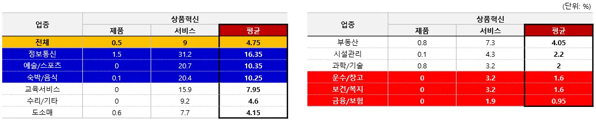
불균형 해소를 위해서는 혁신율이 낮은 업종에서 더 많은 혁신 성과가 도출되어야 한다. 이러한관점에서 혁신율 하위업종 중 하나인 ‘운수 및 창고’ 분야에서 주목해야 할 혁신사례를 찾아 타기업에게 제공할 수 있는 시사점은 없는지 살펴보고자 한다. 본 연구에서는 가파른 성장세를 보이는이커머스(E-Commerce) 시장에서 많은 주목을 받고 있는 ‘㈜오아시스’의 혁신사례에 대해알아보고자 한다.
㈜오아시스는 기존 오프라인 유통 서비스 기업으로서 보유하고 있는 강점과 고객 및 제품에 대한높은 이해를 바탕으로 이커머스 시장에 진출하여 ‘새벽배송은 곧 적자’라는 공식을 깨고 시장 내유일한 흑자기업이라는 지위를 달성한 기업이다. 2011 년 유기농 우리생협( 우리소비자생활협동조합)의 물류, 유통 대행사업으로 시작하여 우리생협 오프라인 위탁판매사업까지 영역을 확대한 ㈜오아시스는 2019 년 이커머스 신선식품 새벽배송 시장에 진출하여 2 년만에 시장점유율 상위 3 개사에 포함되었다. (그림 1 참조) 이는 신선식품 새벽배송 시장선도기업이자 인공지능 수요예측 기술을 앞세운 ㈜컬리와 대기업 자본을 활용하여 첨단 물류센터구축한 ㈜에스에스지닷컴 등 기술력을 바탕으로 한 기업들과의 경쟁에서 이룬 결과로서, 대기업이아닌 기존 전통적 사업을 영위하는 중견기업도 자사만의 강점을 적절히 활용하면 신규 시장에서도충분히 성과를 낼 수 있다고 증명하였다는 점에서도 시사하는 바가 크다.
물론 신선식품 새벽배송 시장을 개척한 ㈜컬리나 전통적 유통기업인 ㈜이마트의 온라인사업부문 물적분할을 통해 출범 후 신선식품 새벽배송 시장에서 시장 점유율을 지속 확대 중인㈜ 에스에스지닷컴의 경우에도 혁신사례로서 충분히 연구가치가 있다. 그러나 본 연구에서는 다음과같은 사유로 ㈜오아시스의 연구 가치가 더 높다고 판단하였다.
첫째, ㈜오아시스는 타 경쟁사 대비 규모의 경제를 실현하지 못하였음에도 현재 신선식품새벽배송 시장 내 유일한 흑자기업이라는 성과를 달성하였다. 이는 ‘신선식품 새벽배송은 곧 적자’ 라는 시장 내 공식을 깬 첫번째 사례라는 점에서 연구가치가 높다.
둘째, ㈜컬리나 ㈜에스에스지닷컴 모두 ‘규모의 경제’라는 기존 시장의 방향성에 발맞추어 투자극대화를 통한 경쟁우위를 점하려고 했으나, ㈜오아시스는 대규모 자본투자보다는 자체 경쟁력을적극 활용하여 기존 시장 방향성과는 차별화된 방식으로 이커머스 시장에 진출하여 위와 같은 성과를달성하였다는 점에서 시사점이 크다.
그림 1. ㈜오아시스 재무현황 (Dart 기업공시 자료, 본인 재가공)
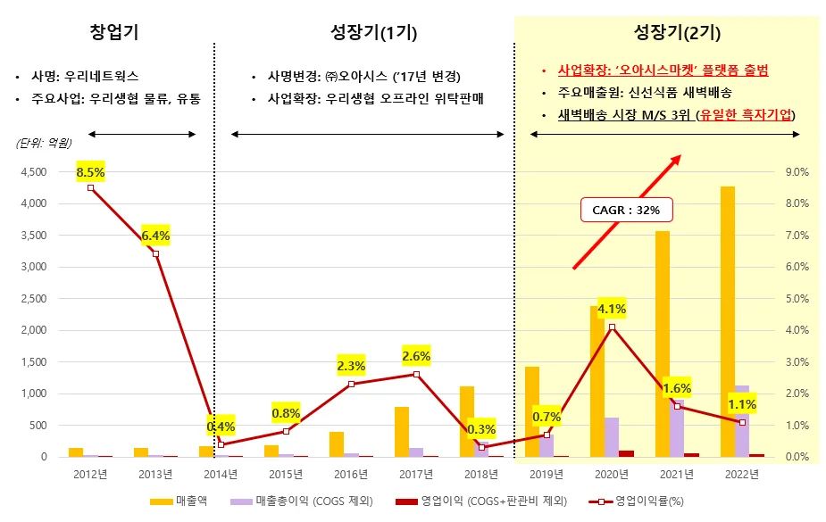
이에 따라, 본 연구에서는 첫째, ㈜오아시스는 어떠한 차별화된 핵심역량과 전략을 바탕으로이커머스 신선식품 시장에서 혁신을 이루었는지, 둘째, ㈜오아시스는 사례가 타 서비스 기업에게주는 시사점은 무엇인지 알아보고자 한다.
1.2 이커머스 신선식품 새벽배송 시장에 대한 정의
2020 년 1 월부터 국내에 본격적으로 확산된 코로나바이러스감염증-19 (이하 코로나-19)은 ‘ 사회적 거리두기’라는 새로운 사회적 규율로 이어지면서 고객의 구매행위를 변화시켰고 이는 국내소매유통산업 시장, 그 중에서도 국내 이커머스 시장 내 새로운 경쟁구도로 이어졌다. ( 나이스신용평가, 2022) 온라인 전자상거래 기반의 이커머스 시장은 1997 년 국내 최초 종합 온라인쇼핑몰을 시작한 인터파크를 위시한 이커머스 1 세대 기업들이 개척한 시장으로 (디지털데일리, 2023) 지금까지 지속적으로 발전하여 2019 년에는 거래액 기준 시장규모 134 조원까지 성장하였다. (통계청, 2020) 꾸준한 발전을 거친 이커머스 시장은 2020 년 코로나-19 로 인한 사회적 거리두기로소비자들의 비대면 구매행위가 대폭 확대되면서 거리두기가 종료된 2022 년까지 시장규모가 약 206 조원으로 확장되어 53%의 비약적인 성장률을 이루었다. (통계청, 2023) (그림 2 참조)
그림 2. 국내 온라인 쇼핑몰 성장 추이 (통계청, 2023)
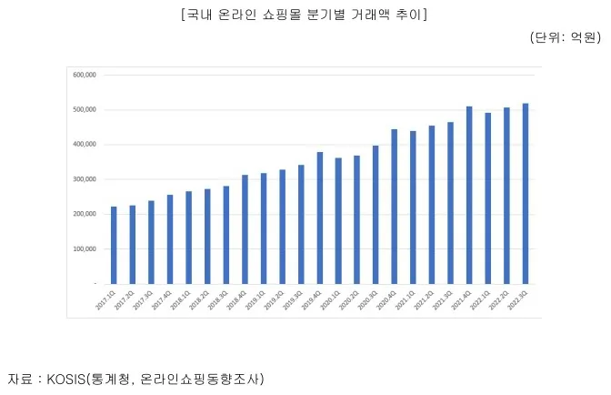
이커머스 시장의 확산은 대표적인 생활필수품인 식품시장에서도 예외를 보이지 않았다. 우선국내 식품 소매시장의 경우, 1 인 가구 증가에 따른 가정간편식 시장의 성장과 건강 민감도 증가에따른 식료품 프리미엄화 등 다양한 요인들로 인해 꾸준히 성장해왔으며, 이와 같이 성장하는 시장에서많은 이커머스 기업들은 적극적으로 사업을 확대해왔다. 그 결과 국내 온라인 식품시장 규모는 2017 년 10 조원 규모까지 성장하였으며, 이는 2021 년에는 31 조원 수준까지 확대되면서 가파른성장세를 보였다. (통계청, 2023) (그림 3 참조)
이는 식품 소비 트렌드가 기존 오프라인 대면구매 방식에서 온라인 배송 구매방식으로 변화되고있음을 보여주는데, 배송과정에서 제품의 신선도를 유지해주는 ‘콜드체인’ 물류 기술의 발달로 인한온라인 식품 구매 신뢰도가 기존보다 높아진 것으로 보인다. 특히나 코로나-19 로 인한 사회적거리두기 확대가 소비자들로 하여금 온라인 식품구매를 과감히 시도해보는 촉매제 역할을 하면서이에 따른 식품 구매 온라인화가 가속된 것으로도 해석된다. 실제로 월 1 회 이상 온라인을 통해식품을 구매하는 가구 비중은 2013 년 8.2%에 수준에 불과했으나 2022 년에는 56.3%까지증가하면서 소비자들이 온라인 식품 구매에 대한 인식이 대폭 개선되었음을 알 수 있다. ( 한국농촌경제연구원, 2022) (그림 4 참조)
그림 3. 국내 온라인 식품 시장 규모 (통계청, 2023)
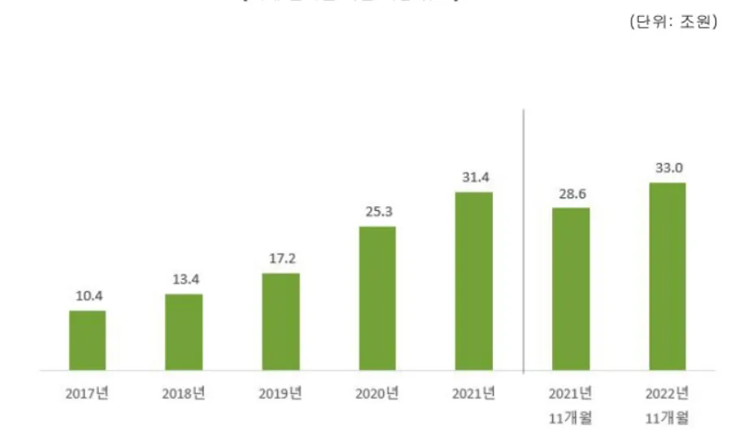
그림 4. 월 1 회 이상 온라인을 통해 식품을 구매하는 가구 비중 추이 (한국농촌경제연구원, 2022)
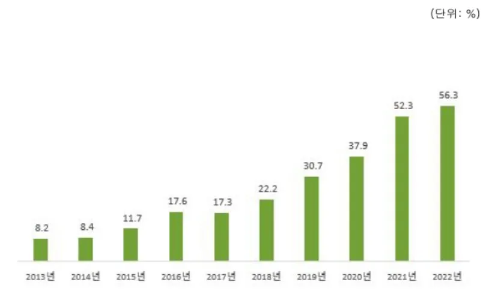
이러한 온라인 식품구매가 활성화되면서 이커머스 기업들간 경쟁은 점점 치열 해졌으며, 그과정에서 2015 년 창업한 ‘컬리’(초기 사명은 ‘더파머스’)는 업계 최초로 전날 밤까지 주문 시 익일새벽에 제품을 배송해주는 ‘샛별배송’을 런칭하였는데, 이는 온라인 식품구매 시장의 새로운 변곡점이되었다. 초기에는 시간제약이 높은 직장인 소비자들 위주로 시장이 형성되면서 시장규모는 2019 년
0.8 조원 수준에 머물렀다. 그러나 코로나-19 확산에 따른 식품 비대면 구매 추세 확산으로 새벽배송
서비스의 대상이 일반 소비자들로 확대되면서 시장규모 또한 2022 년 8.5 조원(예상치)으로 10 배이상 성장하였다. (교보증권, 2021) (그림 5 참조) 주 1 회 이상 새벽배송 이용 가구 비율이 2019 년 7.4% 수준에서 2022 년에는 14.1%로 약 2 배 성장하였는데, 해당 서비스를 사용하기 시작한가구들이 서비스에 만족을 느껴 서비스 사용을 늘린 결과로 해석된다. (한국농촌경제연구원, 2022)
(그림 6 참조)
그림 5. 신선식품 새벽배송 시장 규모 전망 (교보증권, 2021)
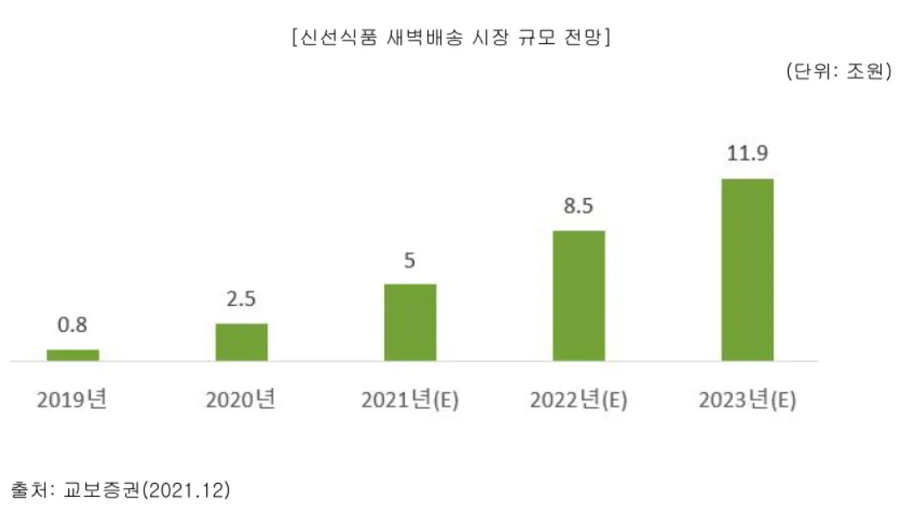
그림 6. 주 1 회 이상 새벽배송 이용 가구 비율 추이 (한국농촌경제연구원, 2022)
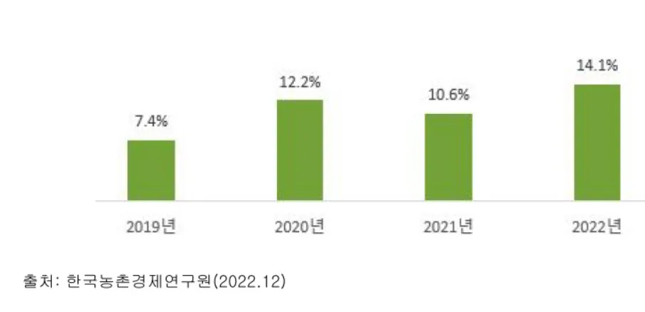
1.3 이커머스 신선식품 새벽배송 시장 현황
국내 이커머스 신선식품 새벽배송 시장은 신선식품 버티컬 커머스(vertical commerce) 기업들의 경쟁으로 구성되어 있다. 버티컬 커머스란 여러 분야의 제품을 종합적으로 판매하는 대신패션, 식품 등 특정 카테고리 제품을 전문적으로 판매하는 이커머스 플랫폼을 의미한다. 시장 내대표적인 버티컬 커머스 기업으로는 ㈜컬리와 ㈜에스에스지닷컴, ㈜오아시스가 있으며, 종합이커머스 쇼핑몰 쿠팡㈜ 또한 2020 년 4 월 부 신선식품 새벽배송 서비스 ‘로켓프레시’를 도입하여서비스 제공 중이다. (그림 7 참조)
그림 7. 주요 신선식품 새벽배송 버티컬 커머스 기업 현황 (네이버 증권, 각 사 DART 공시 자료)
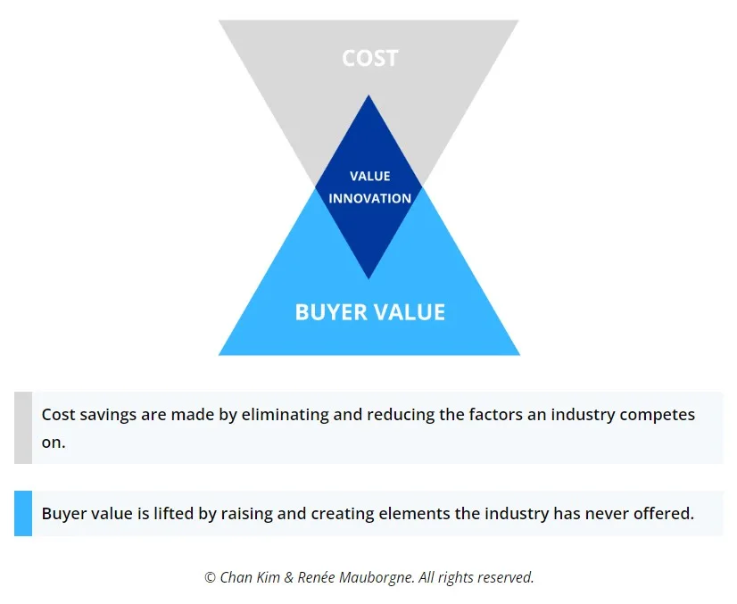
2010 년 7 월 창업한 쿠팡㈜는 국내 대표적인 종합 쇼핑몰 이커머스 플랫폼 ‘쿠팡(Coupang)’을운영중이며, 약 12 년간 소프트뱅크 등 다수 기관으로부터 투자를 받으며 국내 이커머스 시장에일반제품 새벽배송 서비스 ‘로켓배송’을 최초로 도입하여 이커머스 배송 서비스의 새로운 혁신을가져왔으며, 2020 년에는 ㈜컬리가 개척한 신선식품 새벽배송 시장까지 ‘로켓프레시’ 서비스를확대하는 등 지속적인 혁신을 보여 왔다. 그 결과, 2022 년 3 분기 기준 연 누적거래액 32 조 3220 억원, 2022 년 매출 26 조 5917 억원 달성하여 이커머스 시장점유율 1 위 지위에 올랐으며 2022 년 3 분기 흑자전환 이후 계속하여 분기 흑자 기록에도 성공하면서 명실상부 이커머스 선도기업의위치를 굳혔다. 2023 년는 연 기준 흑자전환도 눈 앞에 두고 있다. 다만, 쿠팡㈜의 경우, 상품카테고리 전 영역을 다루는 종합 쇼핑몰로서 기존 일반제품 새벽배송 인프라 및 시스템 기반으로신선식품 새벽배송 서비스를 출범 및 운영하고 있는 관계로 기존 서비스에서의 직간접적 시너지가많아 신선식품 부문만 별도로 분리하여 객관적으로 분석이 어려워 타 버티컬 커머스 경쟁사와 객관적비교가 불가하다. 이러한 사유로 본 연구에서는 쿠팡㈜는 세부분석 및 경쟁사 비교에서 제외한다. ㈜컬리는 2014 년 12 월 ‘㈜더파머스’라는 사명으로 출범한 이커머스 기업으로 2015 년 5 월업계 최초로 신선식품 새벽배송 ‘샛별배송’ 서비스를 런칭하였고 2018 년 3 월 ‘㈜컬리’로 사명을변경하여 현재까지 서비스를 영위하고 있다. 2022 년 기준 매출액은 2 조원을 기록하였으나영업손실 2,289 억원을 기록하면서 영업이익율 -11% 수준을 유지하고 있다. 그러나 회원수는 2022 년 기준 1,200 만명 돌파하면서 신선식품 버티컬 커머스 시장 내 가장 높은 회원수를 유치하였다. ㈜ 컬리는 신선식품을 직접 매입하여 고객에게 판매하는 방식을 선택하고 있으며, 2022 년 11 월 부 ‘ 뷰티컬리’ 브랜드를 새롭게 런칭하면서 상품 카테고리 확장을 시도하고 있다.
㈜컬리가 신선식품 시장의 흐름을 변화시키자 이에 위기를 느낀 기존 오프라인 유통기업 ㈜ 이마트는 온라인 쇼핑몰 사업 부문을 물적분할 하여 2018 년 12 월 ㈜에스에스지닷컴을 새롭게출범하였다. ㈜에스에스지닷컴 플랫폼에서는 자체적인 신선식품 직매입 소싱을 통해 새벽배송서비스를 제공하는 ‘새벽배송’ 서비스를 제공하면서 ㈜컬리의 ‘샛별배송’ 서비스와 경쟁구도를형성하였다. ㈜에스에스지닷컴 플랫폼에는 자체 ‘새벽배송’ 서비스 외에도 ㈜이마트, 신세계 백화점등 신세계 그룹사들 또한 함께 입점 되어 일종의 종합 쇼핑몰 성격을 띤다. 2022 년 기준 매출액은 1.6 조원이며, 이 중 자체 직매입 기반 ‘새벽배송’ 매출액은 0.97 조원이다. 전체 매출의 약 60%가 직매입기반 ‘새벽배송’ 사업에서 발생하고 있으며, 그 외는 ㈜이마트, 신세계 등 위탁판매 수수료 분이다. 그러나 2022 년 기준 영업손실 1,102 억원으로 흑자전환은 실현하지 못하였으나, 그룹사통합회원을 제외한 ㈜에스에스지닷컴 회원수는 2022 년 기준 약 310 만명으로 신선식품 버티컬커머스 부문에서 ㈜컬리에 이어 2 위를 유지 중이다.
㈜오아시스는 상기 경쟁사들과는 다른 길을 걸어왔다. 2011 년 ‘우리네트웍스’라는 사명으로유기농 우리생협의 물류, 유통 대행사업을 영위하였다. 그 후 2017 년 우리생협 오프라인 위탁판매사업으로 사업영역을 확장하였으며 사명 또한 ‘㈜오아시스’로 변경하였다. 이후 신선식품 이커머스시장의 성장 가능성을 보고 2019 년 자체 이커머스 플랫폼 ‘오아시스마켓’을 런칭하여 신선식품새벽배송 서비스를 개시하였다. ㈜오아시스 또한 위탁판매가 아닌 신선식품 직매입 후 판매하고있으며, ‘오아시스마켓’ 런칭 시기인 2019 년 매출액 1423 억원이었으나 2022 년에는 4,274 억원으로 큰 성장폭을 보였다. 무엇보다도 온라인 진출한 2019 년부터 영업이익을 10 억원 기록하며새벽배송은 적자라는 공식을 깼으며, 매출이 지속 확대된 과정에서도 2022 년 영업이익 48 억원을기록하며 적자를 기록한 사례가 없다.
상기 3 개사 외에도 롯데쇼핑㈜(롯데온), ㈜비지에프, ㈜GS 리테일 등 다수 기업들이 새벽배송시장에 뛰어 들었으나 콜드체인 구축을 위한 대규모 설비 투자와 (주간 대비 약 1.5 배 높은) 야간인건비 등 사유로 적자가 지속되어 결국 시장에서 철수하였다. 이러한 시장에서 ㈜오아시스는 어떠한전략을 통해 시장 내 유일한 흑자 기업이 되었는지 살펴본다.
제 2 장. 이론적 배경
2.1 가치혁신(Value Innovation)과 블루오션 전략
가치혁신(Value Innovation)은 프랑스 경영대학원 인시아드(INSEAD)의 김위찬 교수와 Renee Mauborgne 교수가 1997 년 하버드 비즈니스 리뷰(Harvard Business Review)에서발표한 기업 경영전략론이다. 보통 기업들은 비용과 고객가치를 트레이드오프(trade-off) 관계로보고 고객가치를 높이려면 높은 비용이라는 희생이 불가피하다고 생각한다. 그러나 가치혁신은 제품차별화와 저비용을 동시의 추구하는 혁신전략으로 고객가치 제공과 비용절감이란 2 가지 요소를 함께제고한다. (Kim, W. C., Mauborgne, R., 1997) (그림 8 참조)
그림 8. 가치혁신 개념도 (Kim, W. C., Mauborgne, R., 2005)
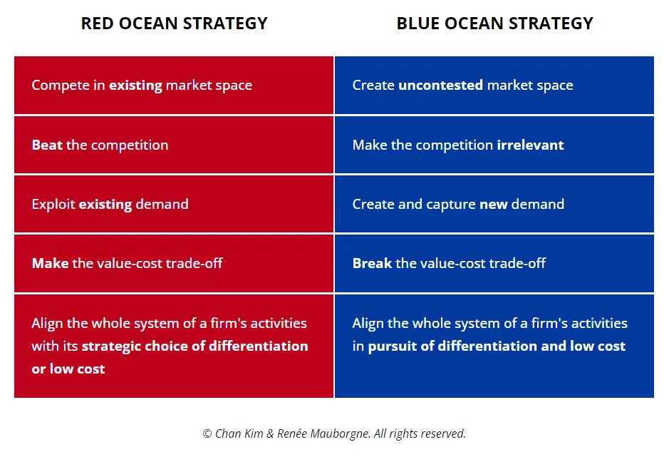
블루오션 전략(Blue Ocean Strategy) 또한 김위찬 교수와 르네 모보르뉴(Renee Mauborgne) 교수가 1997 년 가치혁신 이론과 함께 발표한 개념으로, 기존 시장 경계 내에서경쟁사와 시장점유율을 경쟁하는 레드오션(Red Ocean) 방식에서 발상의 전환을 통해 새로운시장을 창출해야 한다는 전략을 의미한다. 여기에서 블루오션(Blue Ocean)은 많은 경쟁자들로가득한 레드오션과 상반된 의미로 사용된다. 레드오션의 특징은 기존 시장 경계 내에서 경쟁하며 이에따라 경쟁의 성패가 존재하고 기존 수요를 만족시키기 위해 노력하며 가치와 비용을 트레이드오프관계로 인식한다. 이에 반해, 블루오션의 경우, 경쟁이 없는 새로운 시장을 창출하며 기존 경쟁과관계없이 새로운 수요를 포착하여 가치와 비용 간 트레이드오프 관계를 탈피한다. (Kim, W. C., Mauborgne, R., 2005) (그림 9 참조) 이러한 점에서 블루오션 전략과 가치혁신 전략은 밀접한관계를 가진다.
그림 9. 레드오션과 블루오션 간 비교 (Kim, W. C., Mauborgne, R., 2005)
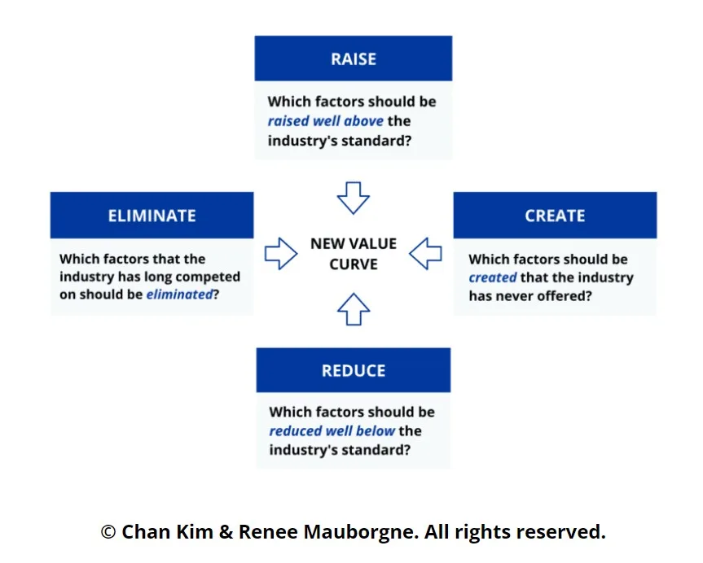
가치혁신 전략과 블루오션 전략을 수행하기 위한 대표적인 도구로 4 Actions Framework 와전략 캔버스(Strategy Canvas)가 있다. 4 Actions Framework 는 기업이 차별화와 저비용 간트레이드오프(Trade-off) 관계를 탈피하기 위해 다음과 같은 질문을 탐구하도록 돕는프레임워크이다: 어떤 요소를 제거(Eliminate), 감소(Reduce), 증가(Raise), 창조(Create) 할것인가? (Kim, W. C., Mauborgne, R., 2005) (그림 10 참조)
그림 10. 4 Actions Framework (Kim, W. C., Mauborgne, R., 2005)
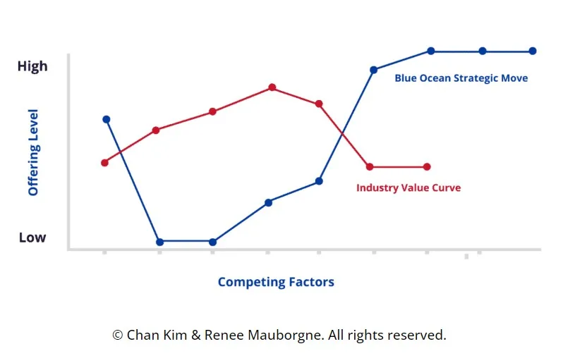
전략캔버스란 기업이 경쟁사 대비하여 요소별로 고객에게 제공하는 가치를 ‘가치곡선(Value Curve)’으로 표현하여 도표화하는 도구이다. (Kim, W. C., Mauborgne, R., 2005) (그림 11 참조)
그림 11. 전략 캔버스 예시 (Kim, W. C., Mauborgne, R., 2005)
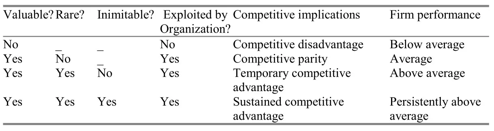
2.2 핵심역량과 VRIO Framework
1990 년 C.K. Prahalad 교수와 Gary Hamel 교수는 기업 경쟁우위의 원천은 단순히 제품의가격 혹은 성능과 같은 표면적인 부분이 아니라 기업이 가지고 있는 고유의 핵심역량(Core Competence)라고 주장하였다. (Prahalad, C. K., Hamel, G., 1990) 핵심역량은 기업 내 학습되고축적된 유무형의 결과물(collective learning in the organization)로 정의되며, 기업의핵심역량인지 여부를 판단하기 위해서는 적어도 다음 3 가지 조건을 충족해야 한다. 첫째, 핵심역량은기업이 현재 진출한 시장은 물론 다른 다양한 시장에서도 확대하여 적용(potential access to a wide variety of markets) 가능하여 한다. 둘째, 핵심역량은 최종 제품의 고객에게 상당한 가치를 제공 (significant contribution to the perceived customer benefits of the end product)해야 한다. 셋째, 핵심역량은 경쟁사가 모방하기 어려워야(difficult for competitors to imitate) 한다. 핵심역량 또한 기업이 보유하고 있는 자원으로 볼 수 있으며, 이러한 점에서 자원 기반 관점 (Resource-Based View)으로 분석해 볼 수 있다. 자원 기반 관점이란 Wernerfelt 교수가 1984 년주창한 개념으로 기업 경쟁력의 원천으로 기업이 보유하고 있는 자원 또한 중요하게 고려해야 한다는관점을 의미한다. 이러한 관점을 바탕으로, 기업의 지속가능한 경쟁우위 확보에 크게 기여하는자원을 구분하기 위한 기준으로서 Barney 교수는 1991 년에 4 가지 핵심요소를 제시하였다. 그핵심요소는 가치성(Valuable), 희귀성(Rare), 모방 불가능성(imperfectly imitable), 대체불가능성 (non-substitutability)이다. Barney 는 이러한 자원을 기반으로 한 전략이 성공적으로 수행되어결과로 이어지기 위해서는 기업 조직의 역량이 적합해야만 한다는 부분도 강조하였다. (Barney, 1986) 이러한 요소들을 종합한 결과물로, 기업의 특정자원이 기업의 경쟁우위로 이어질 수 있는지분석하기 위한 목적으로 VRIO Framework 가 제시되었다. (Barney, Hesterley, 2010) (표 2 참조) VRIO 는 가치성(Valuable), 희귀성(Rare), 모방 불가능성(imperfectly imitable), 조직 적합성 (organizational fit)의 약자로 기업의 자원 우수성 검증에 활용이 용이하다. 본 연구에서는 기업핵심역량 검증을 위해 VRIO Framework 도 함께 사용한다.
표 2. VRIO Framework (Barney, Hesterley, 2010)
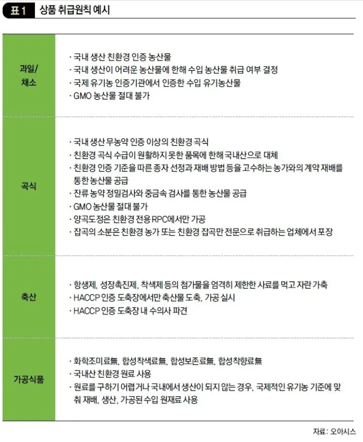
2.3 후발주자의 이점(Late Mover Advantage)
후발주자의 이점(Late Mover Advantage)란 V. Shankar 교수와 G. Carpenter 교수, L. Krishnamurthi 교수가 1998 년 논문에서 발표한 이론으로, 해당 이론에 따르면 일반적으로선도기업이 경쟁에서 우위를 점하는 시장이 많지만 혁신적 후발주자도 ‘후발주자의 이점’을 바탕으로선도기업을 추월할 수 있다. (Shankar, Carpenter, Krishnamurthi, 1998) Shankar, Carpenter, Krishnamurthi 에 따르면, 혁신적 후발기업은 선도기업에 비해 다음과같은 이점을 갖는다. 첫째, 선도기업이 개척한 시장에 대해 별도의 노력없이 편승 가능하다. 이는선도기업이 시장 개척을 위해 투자한 부분을 그대로 활용할 수 있게 됨으로써 마케팅 등 상당한비용절감 효과를 가져온다. 둘째, 후발기업은 선도기업에 비해 신시장에 대한 리스크를 최소화할 수있다. 선도기업의 시행착오를 바탕으로 시장 반응을 미리 파악할 수 있기 때문이다. 셋째, 선도기업의공정방식을 바탕으로 최적의 공정을 적용할 수 있다. 이는 선도기업의 공정 관련 시행착오를 연구하여최적의 공정혁신을 진행할 수 있기 때문이다.
후발주자가 선도기업을 추월하는 대표적인 방식은 다음과 같다. 첫째, 후발주자는 선도주자가간과한 제품 포지션의 틈새를 포착 후 진입하여 해당 제품 기준으로 선도기업보다 낮은 가격 등 더나은 가치를 고객에게 제공하고 선도기업보다 높은 수준의 광고 및 마케팅 혹은 물류 및 유통채널을구축 및 확보한다. 둘째, 제품 혹은 전략 혁신을 통해 시장 내에서 선도주자보다 우위를 점한다.
2.4 전환비용(Switching Cost)과 고객 락인(Lock-in)
전환비용(Switching Cost)이란 1986 년 Farrell 교수와 Shapiro 교수가 Dynamic Competition with Lock-in 이란 논문에서 발표한 개념으로, 고객이 현재 구매 혹은 사용중인 제품을타 제품으로 변경 시 지불해야 하는 직간접 비용을 의미한다. (Farrell, Shapiro, 1986). 전환비용은크게 절차적 비용, 재무적 비용, 그리고 관계적 비용으로 나눌 수 있다. 우선, 절차적 비용이란 거래관계 시 발생하는 비용으로 기존 거래대상을 신규 거래대상으로 변화함으로써 고객이 부담해야 하는경제적 리스크, 평가 비용, 그리고 학습 비용을 의미한다. 재무적 전환 비용이란 거래대상 변경으로발생하는 이익 및 손실, 그리고 거래비용 등 그 밖에 증가하는 부수적인 전환비용을 의미한다. 관계적전환 비용이란 기존 거래대상과의 거래에서 확보한 개인적 관계 손실비용, 그리고 브랜드 의존에 따른편의성 포기비용을 의미한다.
1987 년 Klemperer 교수는 기업들이 고객들을 상기와 같은 전환비용 사유로 경쟁사 제품으로변경하지 않고 기존 제품을 계속 소비하도록 유도하는 ‘고객 락인 전략(Customer Lock-in)’을펼친다고 주장하였다. (Klemperer, 1987) 고객 락인 전략은 대표적으로 크게 3 단계로 추진된다. 우선 고객 입장에서 전환비용이 발생하도록 금전적 및 비금전적 투자를 고객 대상으로 사전에진행한다. (투자) 그 후 고객을 자사제품에 확실히 락인하기 위해 다양하지만 일관된 전환비용 상향전략 수행한다. (고객내재화) 최종적으로 락인된 고객 바탕으로 크로스셀링(Cross-selling), 업셀링
(Up-selling)과 같은 추가적 이윤 창출을 도모하며 시장 내 위치를 지키는 동시에 추가 매출을확보한다.
제 3 장. 혁신사례 연구
3.1 오아시스마켓의 핵심역량
3.1.1 신선식품 유통/물류에 대한 경험 및 전문성
① 경험/전문성 (1) : 12 년간 쌓은 탄탄한 산지 네트워크
㈜오아시스는 생협 출신인 오아시스 주요 경영진 포함한 오아시스마켓 MD 모두 유기농 농/수/ 축산물 생산자들과 현장에서 함께 성장하였다. 약 800 여 개의 오아시스마켓 공급사들 70-80%가 ‘09 년 우리생협 출범 시점, 혹은 그 이전부터 최소 10 년 이상 거래해온 업체들인데, 이 공급사들은경쟁사들이 더 비싸게 사가겠다고 구애해도 쉽게 넘어가지 않는다. ㈜오아시스가 결제 조건을생산자들에게 유리하게 맞춰주면서 12 년간 큰 잡음 없이 함께 성장해온 것이 주요 이유이다. (그림 12 참조)
그림 12. 오아시스-타사 간 납품대금 지급기간 비교 (오아시스 DART 공시자료, 본인 재가공)
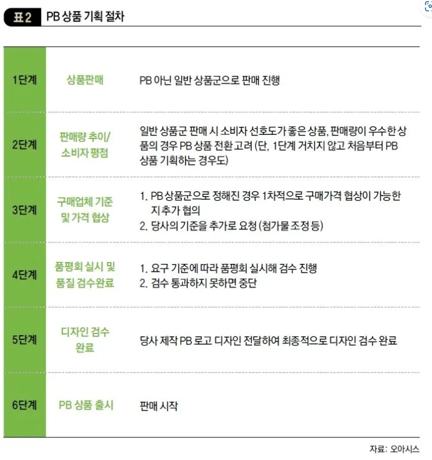
이러한 산지와의 탄탄한 네트워크는 주요 경쟁사와 매우 큰 차별점이다. 2015 년 부 신선식품시장에 진입한 ㈜컬리는 공급사와의 거래기간 부분에서 ㈜오아시스 대비 짧을 수밖에 없다. ㈜ 에스에스지닷컴의 경우, 상품 직매입을 공급사로부터 직접 공수하기보다는 모회사인 ㈜이마트로부터매입하는데, 이는 결국 ㈜이마트의 공급망을 활용하게 된다. 그런데 ㈜이마트는 대기업 거래 특성상대규모 거래 기반한 가격인하 및 내부규정에 따른 결제 조건 유연성 제한 등 사유로 ㈜오아시스와같이 공급사와 깊은 유대관계를 형성하기 어렵다.
② 경험/전문성 (2) : 색소, 첨가물 없는 깐깐한 상품 소싱
㈜오아시스는 높은 수준의 제품 취급 원칙으로 최고의 ‘상품성’ 보증한다. PB 상품 또한 엄격한검수 통해 상품성 검증을 하는데, ‘무항생제‘, ‘무농약 인증’ 이상만 취급하며 (단, 일부 과일에대해서는 가격 문제로 저농약 인증 허용) MSG 와 발색제 등 각종 식품 첨가물 허용하지 않는다. ㈜ 오아시스의 장기적 목적은 상품 품목 늘리는 것 보다 ‘국산 친환경 유기농’이라는 명확한 기준을유지하고 정체성을 지키는 것으로 유기농 전문 판매점이라는 정체성과 이어진다. (표 3, 4 참조)
표 3. 오아시스 상품 취급원칙 예시 (오아시스 DART 공시자료)
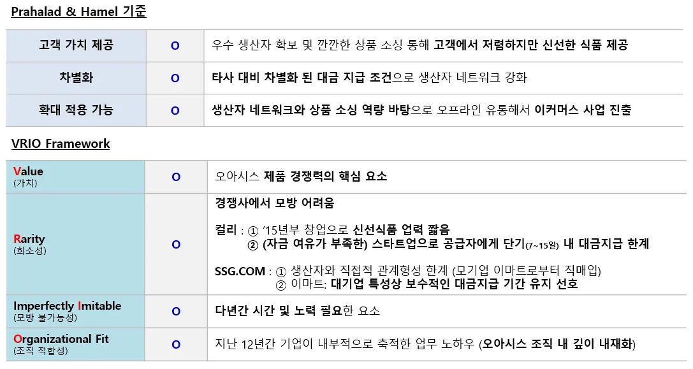
표 4. 오아시스 PB 상품 기획 단계 (오아시스 DART 공시자료)
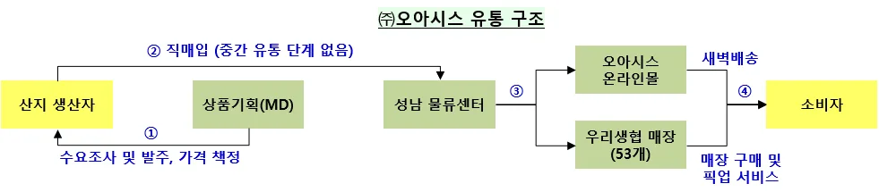
상기와 같은 상품 소싱 방식은 ㈜오아시스가 타 경쟁사 대비 상대적으로 주력상품 종류가 넓지않음에도 유사 혹은 그 이상의 상품 경쟁성을 유지할 수 있다는 배경이다.
③ 핵심역량 평가
㈜오아시스의 신선식품 유통 및 물류에 대한 경험 및 전문성은 Prahalad & Hamel 기준과
VRIO Framework 기준에서 모두 핵심역량에 부합한다. (표 5 참조) 우선 고객 가치 제공 측면에서는우수 생산자 확보 및 깐깐한 상품 소싱 통해 고객에서 저렴하지만 신선한 식품 제공한다. 차별화관점에서는 타사 대비 차별화된 대금 지급 조건으로 생산자 네트워크 강화한다는 점에서 부합한다. 확대 적용 부분은 생산자 네트워크와 상품 소싱 역량 바탕으로 오프라인 유통해서 이커머스 사업진출했다는 점에서 이미 증명하였다.
VRIO 관점에서 살펴보면 가치 부문에서는 오아시스 제품 경쟁력의 핵심 요소라는 점에서부합한다. 희소성 부문에서는 다음과 같은 사유로 경쟁사에서 모방이 어렵다. 우선 ㈜컬리는신선식품 업력이 짧아 공급자 네트워크 구축에 한계가 있으며 스타트업으로 자금 여유가 부족하여공급자들에게 ㈜오아시스와 같은 파격적 대금 조건을 제공하는 것이 어렵다. ㈜에스에스지닷컴은모기업인 이마트로부터 직매입 하는 구도로 생산자와 직접적 관계형성에 한계가 있으며 모기업이마트 또한 대기업으로서 보수적인 대금지급 기간 선호한다는 점에서 ㈜오아시스의 방식을모방하기 어렵다. 이러한 점에서 오아시스의 강점은 시장에서 상대적으로 희소하다. 같은 맥락에서이러한 오아시스의 강점은 다년간 시간 및 노력이 필요한 관계로 모방이 어렵다. 조직 적합성 부문은이미 오아시스는 지난 12 년 간 기업 내부적으로 업무 노하우를 습득한 관계로 조직 깊이 내재화되어있다.
표 5. 핵심역량 평가: 신선식품 유통/물류에 대한 경험 및 전문성 (본인 작성)
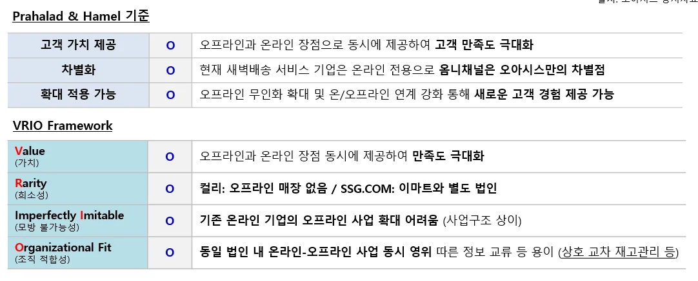
3.1.2 유기농 특화 옴니채널 연계사업 역량
① 우리생협 위탁판매 매장 운영 기반 ‘옴니채널’ 사업 역량 확보
㈜오아시스는 기존 생협 위탁매장 운영 기반하여 온라인 확장한 배경으로 옴니채널 사업 역량확보하였다. 이러한 역량은 오프라인과 온라인 장점으로 동시에 제공하여 고객 만족도 극대화할 수있으며, 이러한 옴니채널 방식은 온라인 기반인 경쟁사들과 큰 차별점이 된다. (그림 13 참조)
그림 13. 오아시스 유통 구조 (오아시스 DART 공시 자료, 본인 재구성)
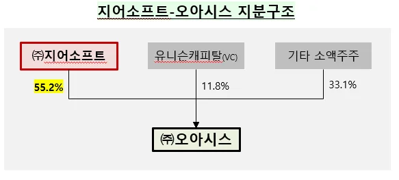
② 핵심역량 평가
㈜오아시스의 옴니채널 연계사업 역량은 Prahalad & Hamel 기준과 VRIO Framework 기준에서 모두 핵심역량에 부합한다. (표 6 참조) 우선 고객 가치 제공 측면에서는 오프라인과 온라인장점으로 동시에 제공하여 고객 만족도 극대화한다. 차별화 관점에서는 현재 새벽배송 서비스 기업은온라인 전용으로 옴니채널은 오아시스만의 차별점이라는 부분에서 부합한다. 확대 적용 부분은오프라인 무인화 확대 및 온/오프라인 연계 강화 통해 새로운 고객 경험 제공 가능하다는 점에서부합한다.
VRIO 관점에서 살펴보면 가치 부문에서는 오프라인과 온라인 장점 동시에 제공하여 만족도극대화한다는 점에서 부합하며, 희소성 부문에서는 (경쟁사와 비교 시) ㈜컬리의 경우 오프라인매장이 없으며 ㈜에스에스지닷컴 또한 이마트와 별도 법인 관계로 오프라인 매장이 없다는 점에서동일하므로 오아시스의 강점은 상대적으로 희소하다. 또한 이러한 오아시스의 강점은 (온라인과오프라인 간 사업구조가 상이한 관계로) 기존 온라인 기업이 오프라인으로 확대가 어려워 경쟁사에서모방이 어렵다. 조직 적합성 부문은 동일 법인 내 온라인과 오프라인 사업 동시 영위 따른 정보 교류 등용이하여 사업에 시너지가 난다는 점에서 부합한다.
표 6. 핵심역량 평가: 옴니채널 사업 역량 (본인 작성)
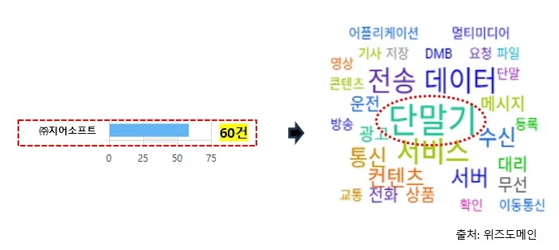
3.1.3 모기업(IT 기업)의 적극적인 S/W 지원
① 모기업 ‘지어소프트’의 단말기 특화된 소프트웨어 기술력 지원
㈜오아시스의 모기업은 소프트웨어 ‘지어소프트’이며, 이 기업은 단말기 기술 특화된소프트웨어 개발 전문 기업이다. (그림 14 참조) 해당 모기업의 소프트웨어 기술역량이 ㈜오아시스의디지털 혁신의 핵심 기반이다. 이러한 역량을 통해 ㈜오아시스는 프로세스 최적화 통한 비용절감으로
고객에서 저렴하지만 신선한 식품 제공할 수 있을 뿐만 아니라, 무조건적 설비투자 보다는 맞춤형자체 소프트웨어 개발을 통해 설비투자를 최소화할 수 있었다.
그림 14. 지어소프트-오아시스 지분구조 (DART 기업공시 자료, 본인 재가공)
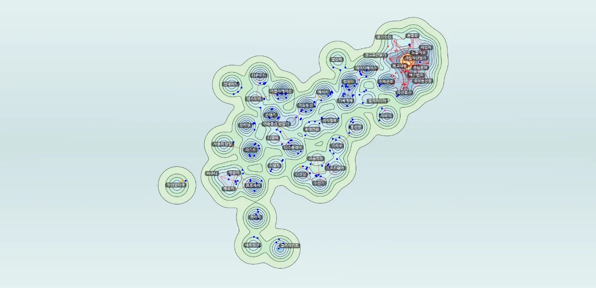
㈜지어소프트는 1998 년 설립된 IT 서비스 및 디지털 마케팅 기업으로 위치기반 서비스를시작으로 통신부문의 플랫폼, 인프라, 유무선 서비스 구축 및 운영 역량을 보유 중이다. 이 부분은지어소프트 보유 특허 현황에서도 알 수 있는데, 특히 단말기 부문에 특화되어 있음을 알 수 있다. (
그림 15, 16 참조) 후술하겠지만 이러한 단말기 기술력은 ㈜오아시스의 물류센터가 최소한의
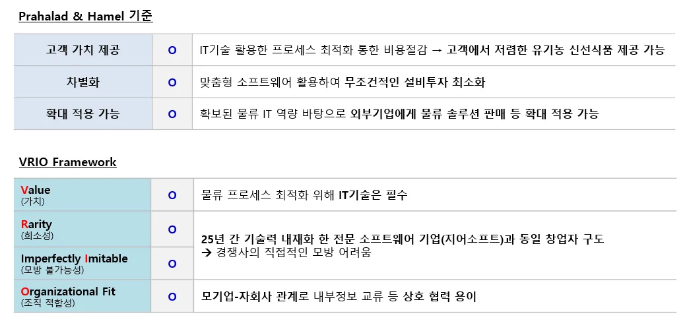
비용으로 서비스 수준을 최대한 끌어올릴 수 있는 주요 요인 중 하나가 되었다.
그림 15. 지어소프트 보유 특허 현황 (위즈도메인, 본인 재가공)
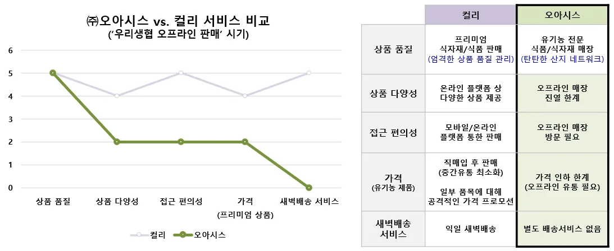
그림 16. 지어소프트 보유 특허 키워드맵 (위즈도메인)
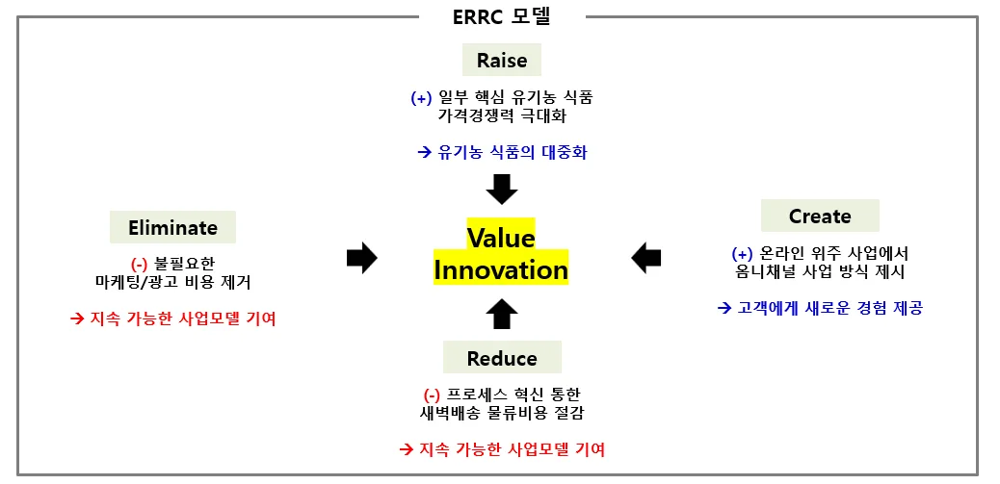
② 핵심역량 평가
㈜오아시스의 자체 소프트웨어 개발 능력은 Prahalad & Hamel 기준과 VRIO Framework 기준에서 모두 핵심역량에 부합한다. (표 7 참조) 우선 고객 가치 제공 측면에서는 IT 기술 활용한프로세스 최적화 통한 비용절감을 함으로써 고객에서 저렴한 유기농 신선식품 제공이 가능하다. 차별화 관점에서는 맞춤형 소프트웨어 활용하여 무조건적인 설비투자 최소화 점에서 부합한다. 확대적용 부분은 확보된 물류 IT 역량 바탕으로 외부기업에게 물류 솔루션 판매 등 확대 적용 가능하다는점에서 부합한다.
VRIO 관점에서 살펴보면 가치 부문에서는 물류 프로세스 최적화 위해 IT 기술은 필수라는점에서 부합하며, 희소성 부문에서는 25 년 간 기술력 내재화한 전문 소프트웨어 기업과 동일 창업자구조 하에서 적극적인 IT 지원을 받을 수 있다는 점에서 희소하며 이러한 특이 구도는 경쟁사에서모방이 어렵다. 조직 적합성 부문은 모기업과 자회사 간 관계로 내부정보 교류 등 상호 협력용이하다는 점에서 부합한다.
표 7. 핵심역량 평가: 자체 소프트웨어 개발 능력 (본인 작성)
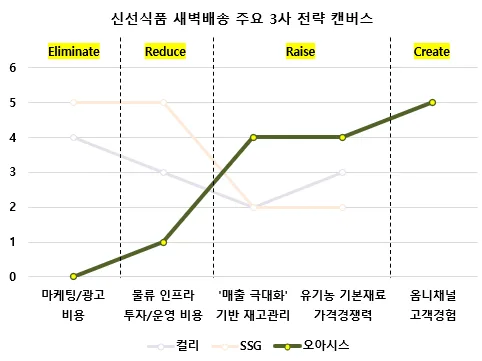
3.2 오아시스의 Late Mover Advantage 와 블루오션 전략
3.2.1 What: 오아시스 경쟁력 현황 (‘오아시스마켓’ 플랫폼 런칭 전)
2015 년 5 월 ㈜컬리(당시 사명 ‘더파머스’)에서 새벽배송 서비스인 ‘샛별배송’ 런칭과 함께공격적인 가격 마케팅 진행하였다. 당시 ㈜오아시스는 우리생협 오프라인 위탁판매 시기로 유기농전문 매장 운영 중이었으며, 이커머스 진출 전으로 아직 ㈜컬리가 직접적 경쟁사는 아니었으며 다만잠재적 경쟁사였다. 이 당시 ㈜오아시스와 ㈜컬리를 비교해보자면, 프리미엄 식품 전문 플랫폼 ㈜컬리대비 상품 품질 측면에서는 동등하였으나 오프라인 매장 운영으로 상품 다양성, 가격, 배송서비스측면에서 열위에 있는 상황이었다. 또한 모바일/온라인 플랫폼 기반인 ㈜컬리 대비 고객 사용 편의성또한 부족하였다. 여기에 ㈜컬리가 새롭게 시작한 새벽배송 서비스는 오아시스에서 제공하고 있지않았다. 오아시스에서 고객이 느끼는 가치(상품 품질, 상품 다양성, 접근 편의성, 유기농 제품 가격, 새벽배송 등)는 전반적으로 ㈜컬리 대비 경쟁력이 낮았다. (그림 17 참조)
그림 17. 오아시스-컬리 서비스 비교 (본인 작성)
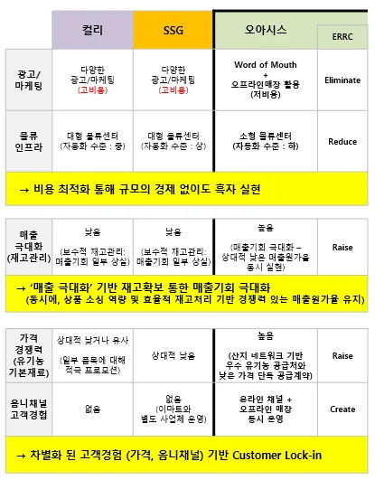
3.2.2 How: ‘오아시스마켓’ 새벽배송 플랫폼 런칭
㈜오아시스는 선도주자 기업(First Mover)로서 ㈜컬리가 개척한 온라인 플랫폼 기반 신선식품새벽배송 시장에서 기회를 보고 2019 년 온라인 플랫폼 ‘오아시스마켓’을 런칭하며 후발 주자(Late Mover)로서 시장 진입을 하였다. 당시 ㈜이마트의 온라인 사업부문 물적분할을 통해 출범한 ㈜ 에스에스지닷컴 또한 함께 새벽배송 시장에 참여함으로써 선도주자인 ㈜컬리와 후발주자인 ㈜ 오아시스, ㈜에스에스지닷컴 간 경쟁이 시작되었다.
후발주자인 ㈜오아시스와 ㈜에스에스지닷컴은 후발주자의 이점(Late Mover Advantage)을적극 활용하여 ㈜컬리가 개척한 ‘신선식품 새벽배송’ 시장에 별도 시장 개척 노력 없이 무임승차(Free Ride) 하였고, ㈜컬리의 시행착오를 반영한 혁신을 추진함으로써 신규 시장 개척 및 경쟁력 확보에소요되는 시간과 비용을 절감할 수 있었다. 다만, 양사간 혁신 방향성은 정반대였다.
㈜에스에스지닷컴의 경우, 대기업으로서 스타트업인 ㈜컬리와 차별화된 막대한 자본력을앞세워 인프라 완전 자동화 전략을 추진하였고 현재 진행형이다. 그러나 막대한 투자와 높은 유지비로지속되는 적자에 따라 충청권 새벽배송 ’22 년 12 월 부 종료하는 등 일부 계획은 한계 직면 중이기도하다. (현대경제신문, 2022)
반면 ㈜오아시스의 경우, 거시적 관점에서 고객 가치 극대화하고 비용 최소화하는 가치혁신을통해 차별화된 강점을 확보하였다. 이는 김위찬과 Renee Mauborgne 이 주창한 블루오션 전략관점에서 바라보면 명확해진다. (그림 18 참조) 블루오션 전략의 프레임워크 중 하나인 4 Actions Framework (ERRC 모델)을 통해 분석해보면, ㈜ 오아시스는 우선 불필요한 마케팅 및 광고 비용을제거(Eliminate)하고 (대규모 인프라 투자가 아닌) 물류 프로세스 혁신을 통해 새벽배송 물류비용을절감함(Reduce)으로써 지속 가능한 사업모델을 확보할 수 있도록 하였다. 여기에 일부 핵심 유기농식품의 가격경쟁력을 극대화(Raise) 함으로서 유기농 식품의 대중화라는 고객 가치를 높였고, 옴니채널(온라인 및 오프라인 채널 동시 운영) 사업 방식을 통해 고객에서 새로운 경험까지 제공 (Create)하여 ㈜오아시스 만의 차별성을 높였다.
그림 18. ERRC 모델: 오아시스 사례 (본인 작성)
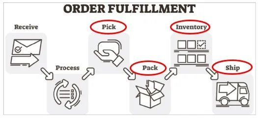
3.2.3 Benefit: ERRC 통해 가치혁신 실현
㈜오아시스는 ERRC 를 통해 비용은 낮추고 고객의 가치를 극대화하는 가치혁신을달성하였다고 평가된다. 우선 마케팅 및 인프라 비용 최소화 통해 규모의 경제 없이도 흑자 실현 발판마련하였고, 효율적 재고관리 체계 구축 통해 매출 기회 극대화하였다. 또한 유기농 상품 가격 경쟁력극대화 및 옴니채널 전략 통해 고객 락인(Lock-in)할 수 있었다. (그림 19 참조) 세부적으로 살펴보면, 광고 및 마케팅 부문의 경우, 경쟁사인 ㈜컬리와 ㈜에스에스지닷컴 모두
높은 비용을 투자하고 있으나 ㈜오아시스는 구전(Word-of-mouth)과 기존 오프라인 매장을 홍보인프라로 활용하며 광고 및 마케팅 비용을 절감하고 있다. 물류 인프라에 경우 언급한 바와 같이경쟁사들 모두 대형 물류센터 운영하며 일정 수준 이상의 자동화 설비를 활용하고 있으나 ㈜ 오아시스는 인프라 투자를 최소화함으로써 초기 투자비용과 운영비를 절약할 수 있었다.
재고자산의 경우, 수요 예측 기반 재고 정책에 중점을 두는 경쟁사와는 달리 오프라인 매장을잔여재고 처리에 적극 활용함으로써 ‘매출 극대화’ 기반 공격적 재고 확보가 가능하도록 하였다. 이에따라 매출기회를 극대화하는 동시에 폐기율은 낮추었으며 그럼에도 경쟁력 있는 상품소싱 역량을바탕으로 매출원가 수준은 경쟁사와 유사 수준으로 유지하여 매출과 손익을 동시에 증대하였다. 그 밖에도 핵심역량을 바탕으로 유기농 제품의 가격 경쟁력을 확보하여 고객 만족도를 높였고옴니채널 사업구도를 영위함으로써 차별화된 고객경험까지 제공하고 있다.
그렇다면 ㈜오아시스는 각 ERRC 전략을 구체적으로 어떠한 방식으로 전개하였으며 어떠한혁신 성과를 달성하였을까? 각 세부전략에 대해 다음 장에서 구체적으로 살펴본다.
그림 19. 신선식품 새벽배송 주요 3 사 전략 캔버스 (본인 작성)
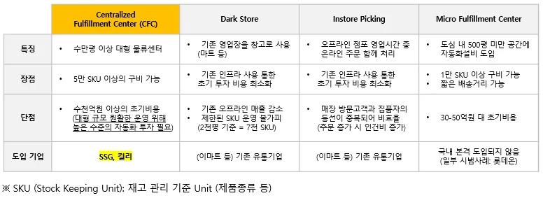
3.3 ERRC①: 차별화된 물류 인프라 운영 전략
3.3.1 What: 기존 업체들의 정형화된 물류센터 운영방식
새벽배송에서 주요 비용절감 가능 부분은 Picking, Packing, Inventory, Ship 단계이며 (그림 20 참조) 이를 비용으로 산출 시 인건비, 관리비, 포장 및 운반비에 해당된다. 재무제표 상에는 ‘판매비및 관리비’에 포함된다. 인건비는 물류센터 운영 시 투입되는 인력에 대한 비용이며, 관리비와 포장, 운반비는 물류센터 운영 시 발생되는 고정비 및 변동비에 해당한다. 그 밖에도 물류 운영 과정에서직매입 후 잔여재고 폐기 따른 손실 비용이 발생할 수 있는데, 해당 손실 비용은 재무제표 상 ‘매출원가’ 에 반영된다.
그림 20. 풀필먼트 프로세스 개념도 (VictorMine)
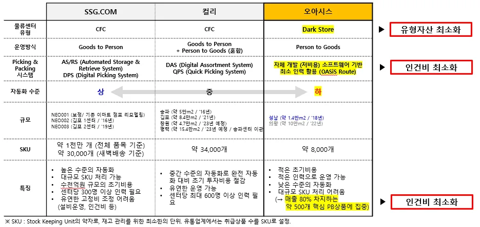
이커머스 신선식품 물류센터 유형은 크게 Centralized Fulfillment Center(CFC), Instore Picking, Dark Store, Micro Fulfillment Center 로 구분할 수 있다. (표 8 참조) 규모면에서 보면, CFC 는 대형 물류센터로 구분되며, 그 외는 소형 물류센터로 구분할 수 있다. CFC 방식은 많은 SKU(Stock Keeping Unit)을 처리할 수 있다는 장점이 있지만, 높은 초기비용이 소요된다는 단점이있다.
Instore Picking 과 Dark Store 방식의 경우, 이마트 등 기존 유통기업들이 배송시장 진입을위해 활용하는 보조적 수단으로 볼 수 있다. 2 가지 방식 모두 기존 오프라인 영업장을 활용하는방식으로 해당 영업장을 운영하면서 동시에 물류센터로 활용하는지(Instore Picking), 아니면운영은 하지 않고 물류센터로 전환하여 활용하는지(Dark Store)에 따라 나뉜다. 2 가지 방식 모두기존 인프라를 활용한다는 측면에서 초기 투자비용을 최소화한다는 장점이 있지만, 이커머스 물류에최적화되어 있지 않다는 부분에서는 물류 효율에 한계가 있다.
그 밖에 Micro Fulfillment Center 의 경우, 도심 내 틈새 공간을 활용한다는 이점이 있지만좁은 공간에서 물류 효율 극대화 위해서는 높은 자동화 투자가 불가피하며 이에 따라 높은 비용이수반된다는 단점이 있어 국내에는 아직 본격적으로 도입되지는 않은 상황이다.
현재 신선식품 이커머스 주요 경쟁사인 ㈜컬리와 ㈜에스에스지닷컴에서는 CFC 방식을 도입중이다. 그 이유는 쿠팡㈜과 같이 규모의 경제 달성 통한 흑자 전환이 최종 목적이기 때문이다. 이를위해서는 대규모의 물류센터 투자가 불가피하며, 이에 따라 높은 초기 비용이 수반된다.
그렇다면 ㈜오아시스는 어떠한 방식으로 주요 경쟁사인 ㈜컬리, ㈜에스에스지닷컴과차별화하였을까?
표 8. 물류센터 유형별 특징 (마종수, 2023) (본인 재구성)
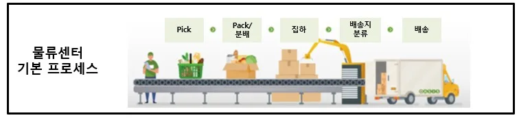
3.3.2 How: 차별화된 물류 인프라 운영 방식 통해 비용 최소화
㈜오아시스는 ‘규모의 경제’ 대신 ‘선택과 집중’ 방식을 선택하였다. 그 결과, ㈜오아시스는경쟁사 대비 자동화 최소화한 소규모 ‘다크스토어’ 방식을 채택하였다. 그러나 기존 오프라인 매장을활용한 방식은 아니며 기존 오프라인 매장 전용 물류센터를 ‘Dark Store’ 방식으로 재해석하여 설계후 운영 중이다. 이러한 방식을 통해 우선 ㈜오아시스는 유형자산을 최소화하여 초기 투자비용과고정비용 최소화하였다. 뿐만 아니라, 소수 핵심 SKU 위주 운영 방식과 자체 개발 소프트웨어 활용한물류센터 운영 방식을 통해 운영 효율 극대화하여 자동화 투자 및 인건비를 최소화하였다. (표 9 참조) 세부적인 방법론은 다음과 같다.
표 9. 오아시스-경쟁사 간 물류 인프라 운영 전략 (마종수, 2023) (본인 재구성)
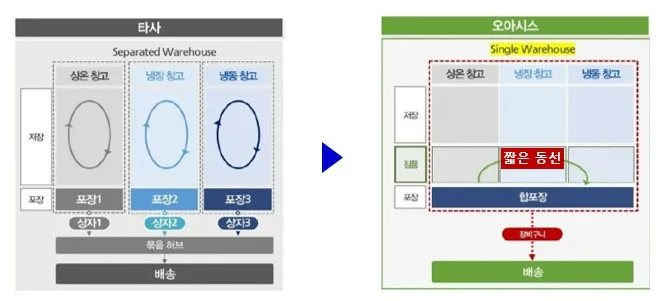
① Pick & Pack 동선 최소화
㈜오아시스 물류센터의 세부 업무 프로세스는 일반 물류센터와 크게 다르지 않다. 앞서 설명한프로세스와 동일하게 고객에서 발송할 제품을 보관공간에서 Picking 한 이후 포장 공간으로 보내고객 당 1 개 박스에 포장 후 집하 및 분류 과정 통해 최종 배송된다. (그림 21 참조)
그림 21. 오아시스 물류센터 기본 프로세스 (오아시스 DART 공시자료)
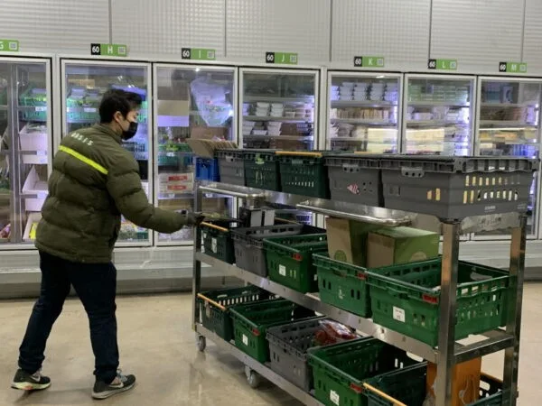
그러나 좀 더 세부단계로 살펴보면 경쟁사와 다른 점을 알 수 있다. 우선 타사 물류센터의 경우일반적으로 보관공간이 상온, 냉장, 냉동 구역으로 구분되어 있으며 각 구역에서 상자에 1 차 Picking 한 이후 이를 고객별로 다시 묶는 작업을 거쳐 최종 포장 후 배송한다. 그러나 ㈜오아시스의 경우,
보관공간을 기능별 구역으로 나누지 않고 일반 매장과 같이 동일 공간에 보관한다. 그 대신 제품을 Picking 하는 직원이 해당 지역을 돌아다니며 1 개 장바구니에 Picking 을 한 후 단일 박스에합포장하여 고객에서 발송한다. (그림 22 참조) 이러한 방식을 선택하게 되면 Picking 하는 단계를획기적으로 줄일 수 있으며, 동선 또한 짧아져 Picking 과 Packing 하는 시간도 단축시킬 수 있다.
그림 22. 오아시스-타사 간 물류센터 Pick & Pack 동선 비교 (오아시스 DART 공시자료)
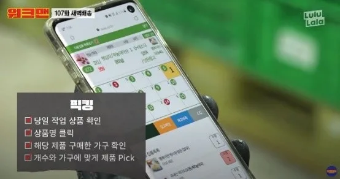
② 인력 효율성 극대화
상기 방식은 동선이 짧아질 수는 있지만 Picking 을 하는 인력의 효율 및 수련도에 따라 프로세스효율성에 기복이 있을 수 있다는 단점이 있다. 우선 인력의 효율을 높이기 위해 ㈜오아시스는 자체제작한 Picking 카트를 도입하였다. 일반적으로 Instore Picking 이나 Dark Store 방식을 도입할경우, 인력의 효율을 높이기 위해 여러 장바구니를 한 번에 가지고 다닐 수 있는 특수 제작 카트를제공한다. 하지만 장바구니가 너무 많을 경우 장바구니 당 담을 아이템에 혼선이 있을 수 있는 관계로최대 6 개 정도 운영한다. 그러나 ㈜오아시스의 경우, 자체 제작 카트 통해 최대 20 개의 장바구니를싣고 다닐 수 있도록 하고 있다. 그렇다면 직원들의 혼선 가능성(human error)은 어떻게 대응하고있는가?
이 부분을 보완하기 위해 자체 제작 단말기 소프트웨어 ‘오아시스 루트(OASiS Route)’가사용된다. 우선 Picking 작업자가 오아시스 루트를 본인 휴대전화 단말기에 설치한 후 Picking 하기전 먼저 작동시킨다. 그리고 Picking 작업자가 주문확인서를 QR 코드로 오아시스 루트에 인식시키면, 오아시스루트에서 필요한 상품을 확인한 후 작업자에게 최적 Picking 동선 가이드를 네비게이션방식으로 Picking 담당자에게 안내한다. 작업자는 오아시스루트의 지시에 따라 작업을 하므로 혼선가능성이 없으며 이러한 방식으로 최대 20 개까지 장바구니 Picking 을 소화할 수 있다. (그림 23 참조)
그림 23. 오아시스 자체 제작 Picking 카트 및 자체 개발 소프트웨어 ‘오아시스 루트’
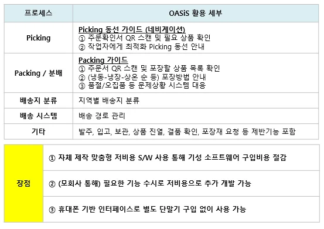
그 밖에도 오아시스루트를 통해 Packing 과 분배, 배송지 분류, 배송 경로 관리 및 기타 제반업무를 처리함으로써 인력의 효율을 극대화된다. (표 10 참조) 오아시스루트를 도입함으로써 ㈜ 오아시스는 다음과 같은 장점을 얻고 있다. 우선 자체 제작 맞춤형 저비용 소프트웨어를 사용함으로써기성 소프트웨어 구입 및 사용 비용을 절감하고 있으며, 또한 (모회사 통해) 필요한 기능을 수시로저비용으로 추가 개발 가능하여 적시에 알맞게 유지보수가 가능하다. 그 밖에도 휴대폰 기반인터페이스로 별도 특화 단말기 구입 없이 일반 휴대폰을 사용할 수 있어 비용 절감이 가능하다는이점이 있다.
표 10. 오아시스 루트 활용내역 세부 및 장점 (오아시스 DART 공시자료, 본인 재구성 및 작성)
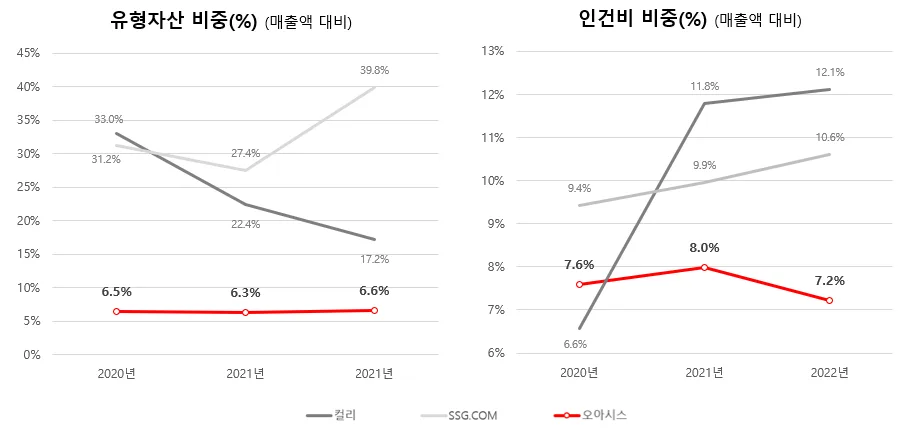
3.3.3 Benefit: 유형자산 운영 효율 극대화
㈜오아시스는 이와 같이 차별화된 물류 인프라 운영을 통해 유형자산과 인건비 효율을극대화하였다. 우선 매출액 대비 유형자산 비중을 살펴보면 경쟁사인 ㈜컬리와 ㈜에스에스지닷컴의경우 17%에서 39.8%까지 차지하고 있으나 ㈜오아시스는 6% 수준에 머무르고 있는 것을 확인할 수있다. (그림 24 참조) 여기에서 ‘유형자산’은 토지, 건설중인 자산, 건물, 리스자산, 설비자산 포함하며, ㈜오아시스는 이커머스 신선식품 새벽배송과 무관한 오프라인 매장의 비물류자산도 포함된 수치임을
고려 시 물류 인프라 효율성은 경쟁사 대비 월등히 높다고 볼 수 있다.
여기에서 또 한가지 주목해야 할 점은 인건비이다. ㈜오아시스가 선택한 물류센터 운영방식은 Dark Store 방식으로 CFC 등 자동화 수준이 높은 타 물류센터 방식 대비 인력 투입이 더 많이 된다는단점이 있었다. 하지만 매출액 대비 인건비 비중을 살펴보면 6.6%에서 12.1%까지 발생하는 경쟁사 (CFC 방식) 대비 유사하거나 더 낮음을 확인할 수 있다. (그림 24 참조) 이는 ㈜오아시스가 인력비중이 높은 물류센터 방식을 채택하였음에도 불구하고 노하우를 통한 물류센터 자체 재설계와 (Picking 카트, 오아시스루트 등) 인력 효율화를 위해 노력한 결과물이라고 볼 수 있다. ※ 유형자산: 토지, 건설중인 자산, 건물, 리스자산, 설비자산 포함
그림 24. 오아시스-경쟁사 간 매출액 대비 유형자산 및 인건비 비중 비교
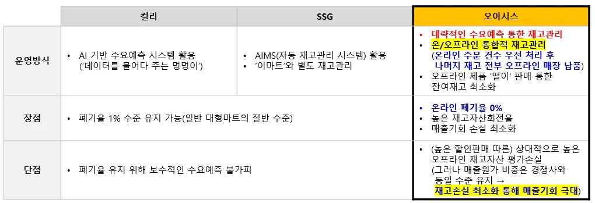
(오아시스 DART 공시자료, 본인 재구성)
3.4 ERRC②: ‘매출 극대화‘ 기반 재고관리
3.4.1 What: 새벽배송의 최대 딜레마-결품 방지 vs 폐기율 최소화
신선식품 새벽배송은 약속된 시간에 배송하기 위해 물류센터에 배송상품을 사전에 직매입 하여보관 후 주문 즉시 Picking 하여 단시간에 배송하게 된다. 이러한 사유로 수요예측 과다 시 잔여재고폐기 따른 손실로 이어질 수 있으며, 이는 매출원가 상승으로 이어진다. 그래서 잔여재고 방지를 위해예상 판매량 대비 5~10% 정도 낮게 보수적인 수요예측 불가피한데, 이는 ‘결품’에 의한 매출기회손실 발생으로 이어지며 고객 서비스에도 악영향을 주게 된다.
3.4.2 How: 옴니채널 사업구조 활용하여 온라인 재고 오프라인 소진
우선 주요 경쟁사의 경우, 재고관리 방식으로 인공지능 기술을 활용한 수요예측 기반 시스템을활용하여 폐기율 1% 수준을 목표로 재고를 운영하고 있다. 이와 같은 방식은 폐기율을 낮출 수는있으나 이를 위해 보수적인 수요예측 기반 재고관리가 불가피하다는 단점이 존재한다.
반면 ㈜오아시스의 경우, 온라인-오프라인 통합 재고관리 방식을 선택하여 차별화하였다. (표 11 참조) 통합 재고관리 방식이란, 온라인 주문 건수 우선 처리 후 나머지 재고 전부 오프라인 매장납품하는 방식을 의미한다. 온라인 잔여재고를 바로 오프라인 할인제품으로 전환하여 판매를함으로써 잔여재고를 최소화할 수 있어, 온라인 폐기율 0%를 달성할 뿐만 아니라 무엇보다도 공격적재고관리가 가능하여 매출기회 손실을 최소화할 수 있다는 장점이 있다. 다만, 오프라인 매장에서재고 상품을 할인판매 함으로써 재고자산 평가손실이 높아질 수 있다는 단점이 존재한다. 하지만
후술하겠지만 ㈜오아시스는 핵심역량인 산지 네트워크에 기반한 제품 소싱 역량을 통해 낮은 원가를확보함으로써 매출원가율을 경쟁사와 동등한 수준으로 관리하면서 이러한 단점을 보완하고 있다.
표 11. 오아시스-경쟁사 재고 운영방식 비교 (정혜민, 2019) (마종수, 2023) (본인 재구성)
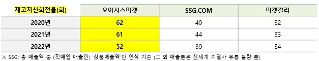
3.4.3 Benefit: 매출기회 극대화, 경쟁력 있는 매출원가
㈜오아시스는 온라인-오프라인 통합 재고관리 방식을 통한 공격적 재고관리를 통해 경쟁사 대비상대적으로 높은 재고관리회전율을 보이고 있다. (표 12 참조) 이는 ㈜오아시스가 수요예측에 기반한정밀한 재고관리보다는 자사의 오프라인 매장 재고 처리 역량을 바탕으로 매출기회 극대화 기반재고관리를 하고 있음을 의미한다.
표 12. 오아시스-경쟁사 재고자산회전율 비교 (DART 공시자료, 본인 재구성)
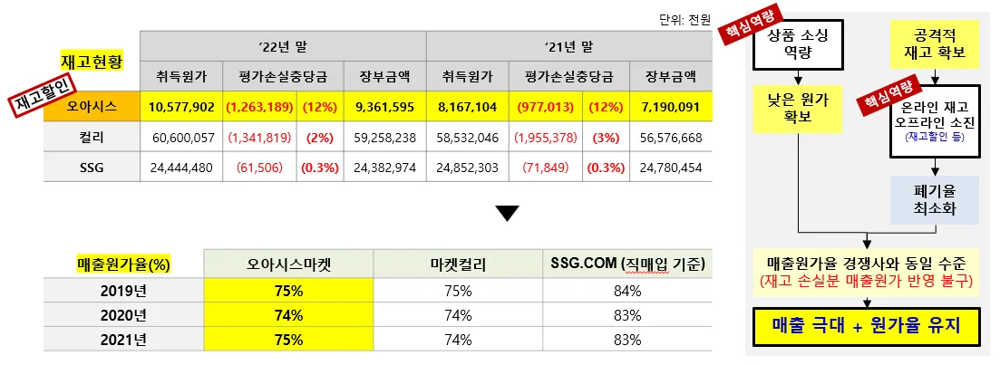
물론, 온라인 잔여재고를 오프라인 전환하여 할인 판매하게 되면 평가손실충당금이 높아질수밖에 없고 실제로 ㈜오아시스의 평가손실충당금은 12% 수준으로 경쟁사 대비 최대 11.7%p 가높다. (표 13 참조) 하지만 최종 매출원가율은 경쟁사인 ㈜컬리와 동일 수준이며, ㈜ 에스에스지닷컴의 경우에는 더 높다는 점을 확인할 수 있다. 이는 애초에 납품상품 원가가 낮다는것을 의미하며, 이러한 결과는 ㈜오아시스의 핵심역량인 상품 소싱 능력에 기반한 것으로 볼 수 있다.
표 13. 오아시스-경쟁사 평가손실충당금 및 매출원가율 비교 (Dart 공시자료, 본인 재구성)
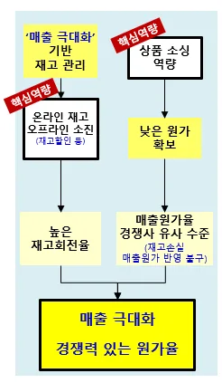
상기에서 설명한 내용은 개념도(그림 25 참조)로 정리해 볼 수 있다. ㈜오아시스는 핵심역량을바탕으로 매출 극대화하는 동시에, 경쟁력 있는 원가율 유지라는 2 가지 혁신 성과를 얻을 수 있었다.
그림 25. 오아시스 상품 소싱 및 재고관리 역량 활용 개념도 (본인 작성)
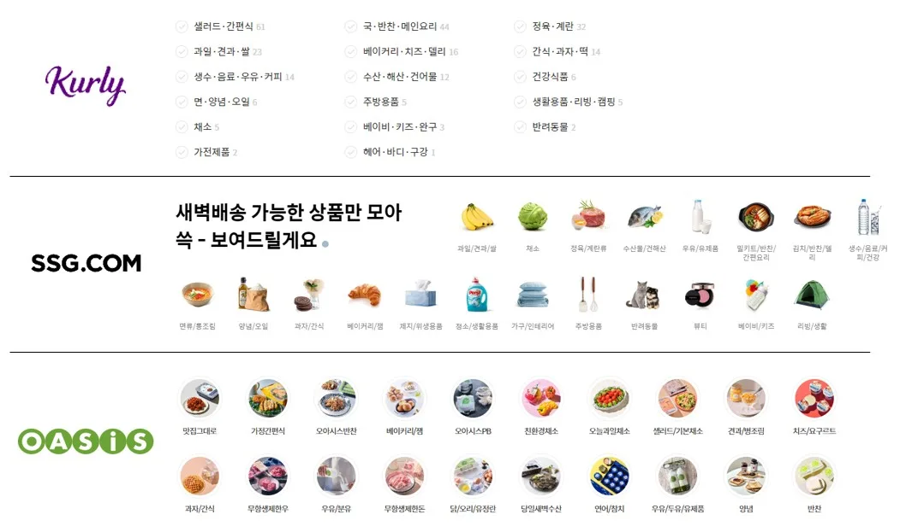
3.5 ERRC③: 상품 차별화 통한 충성고객 확보
3.5.1 What: 시장 내 다수 유사한 상품들
신선식품 시장의 특징은 기본적인 상품 카테고리가 정해져 있어 차별화하기 어렵다는 점이다. 현재 ㈜오아시스와 주요 경쟁사의 상품 카테고리를 살펴보면 차별화될 만큼 구분이 되지 않는다. (
그림 26 참조) 이러한 시장에서 고객을 유인할 수 있는 방법은 가격 인하 프로모션이나 스타 마케팅,
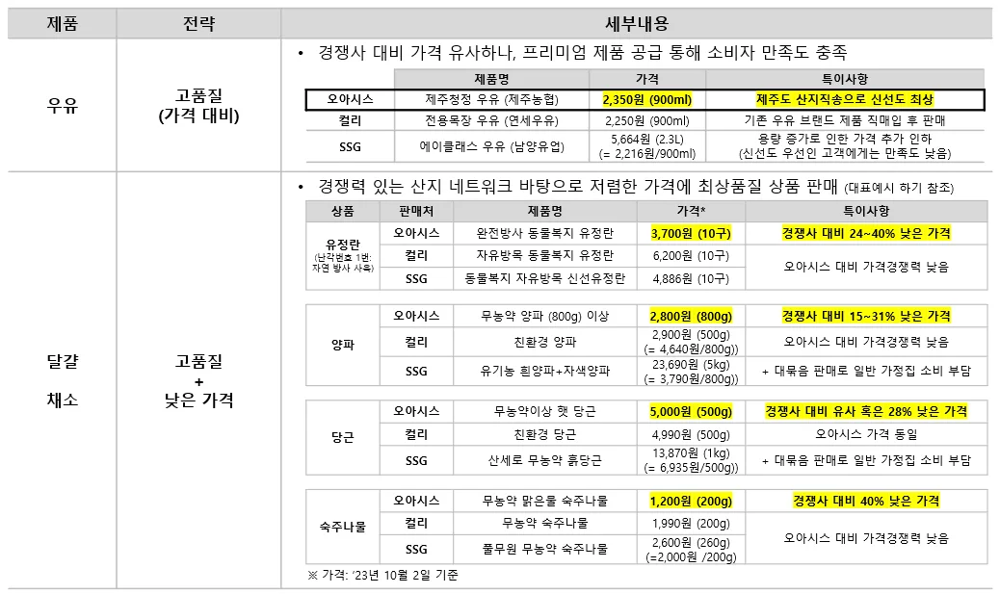
혹은 소위 ’히트’ 상품을 만드는 정도로 제한된다. ㈜오아시스는 어떠한 방식으로 차별화하였을까?
그림 26. 오아시스-경쟁사 간 상품 카테고리 비교 (각 사 홈페이지, 본인 재구성)
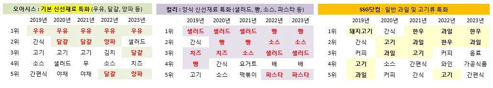
3.5.2 How: 핵심제품 고품질 및 저가격 정책
㈜오아시스는 핵심제품에 대해 높은 품질과 가격경쟁력으로 차별화하였다. 우선 ㈜오아시스는우유와 달걀, 채소와 같은 기본 신선재료 제품에 집중하였고 해당 카테고리의 핵심 제품들의 품질과가격경쟁력 모두 최상으로 끌어올렸다. (표 14 참조) 예를 들어 대표 프리미엄 인기상품 중 하나인제주 청정 우유의 경우 타사 일반 우유 제품과 가격은 유사하나 프리미엄 제품이라는 점에서 경쟁력이있다. 그 밖에도 달걀의 경우, 달걀 등급 중 최상인 난각번호 1 번 상품을 경쟁사 대비 최대 40% 낮은가격에 판매하고 있으며, 양파, 당근, 숙주나물 등 기본 채소 상품들 또한 마찬가지이다.
표 14. 오아시스-경쟁사 간 주요 상품 가격 비교 (각 사 홈페이지, 본인 재구성)
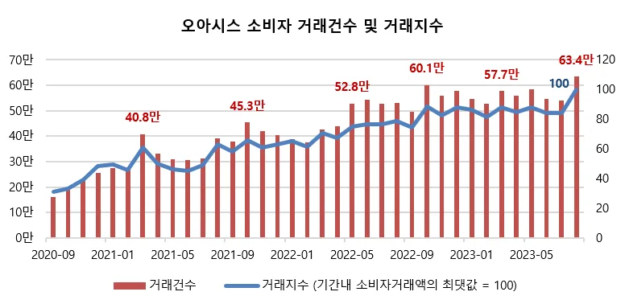
3.5.3 Benefit: 핵심제품 통한 확실한 Identity 확보
㈜오아시스는 이러한 제품 차별화를 통해 우유나 달걀, 양파 등 기본 신선재료에 특화된
판매자라는 정체성(Identity)을 고객에게 각인시킬 수 있었다. 이는 소셜미디어 분석을 통해서 알 수있다. (표 15 참조) 경쟁사와 ㈜오아시스 간 관련 소셜미디어 게시글에 함께 언급된 키워드를 분석한결과, ㈜오아시스는 기본 신선재료 관련 키워드가 많이 검색되었고, ㈜컬리는 양식 신선재료 제품, ㈜ 에스에스지닷컴은 일반 과일 및 고기류 쪽의 키워드가 검색되었다. 물론 본 방법론은 소셜미디어를사용하지 않는 고객의 의견이 반영되지 않는다는 한계점이 있으나 ㈜오아시스에 대한 고객이 느끼는정체성에 대한 맥락을 알 수 있다는 점에서 유의미하다고 볼 수 있다.
표 15. 오아시스-경쟁사 간 소셜미디어 게시글 키워드 분석 결과 (썸트렌드, 본인 재가공)
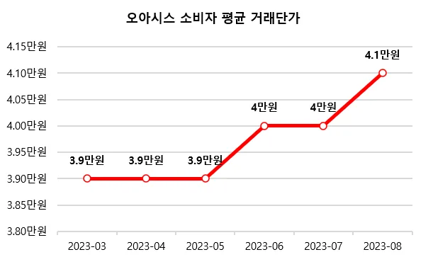
실제로 ㈜오아시스의 이러한 정체성은 소비자 거래로 이어지고 있다. 2020 년 9 월 16 만건이던 월 거래건수는 2023 년 8 월 63.4 만 건으로 증가하였다. 월별 거래액(거래지수)로 살펴보면지속적인 증가세를 보이고 있음을 알 수 있다. (그림 27 참조) 거래액 증가는 ㈜오아시스 소비자 평균거래단가를 보면 더 명확히 알 수 있다. 평균 거래 단가는 2023 년에만 3 월 3.9 만원에서 8 월 4.1 만원으로 5% 증가하였다. (그림 28 참조) 이러한 데이터를 통해 ㈜오아시스는 거래건수 뿐만 아니라거래단가까지 증가시키면서 매출 증대로 연결시키고 있다는 점을 알 수 있다.
그림 27. 오아시스 소비자 거래건수 및 거래지수(거래액) (혁신의 숲, 본인 재가공)
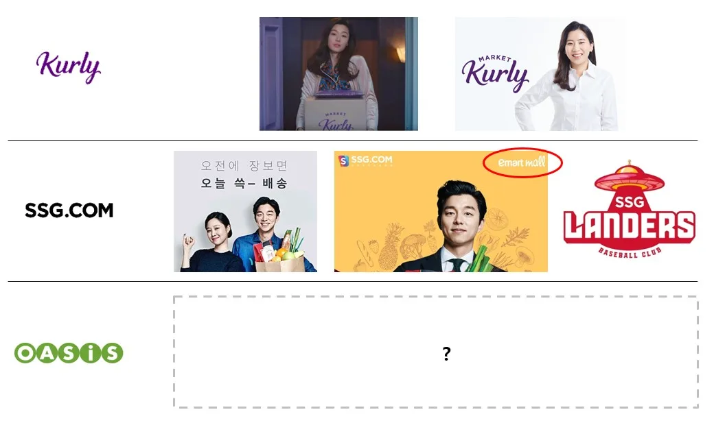
그림 28. 오아시스 소비자 평균 거래단가 (혁신의 숲, 본인 재가공)
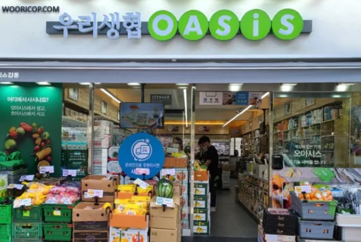
3.6 ERRC④: 마케팅/광고비 최소화
3.6.1 What: 치열해지는 경쟁구도 속 이름 알리기 전쟁
앞서 설명한 한 바와 같이, 신선식품 시장의 특징은 기본적인 상품 카테고리만으로 차별화하기어려워 고객 유인을 위해서는 적극적인 마케팅 및 광고가 필수라고 인식된다. 이러한 점은 주요경쟁사에서도 잘 드러난다. ㈜컬리의 경우, 스타 마케팅 외에도 대표자 자신을 마케팅 요소로 적극활용하고 있으며, ㈜에스에스지닷컴은 스타 마케팅에 신세계 계열사까지 활용하여 고객 유인에적극적이다. 이에 반해 ㈜오아시스는 마케팅에 소극적이다. (그림 29 참조) ㈜오아시스는 어떠한방식으로 이 부분을 차별화하였을까?
그림 29. 오아시스-경쟁사 간 마케팅 현황 비교 (각 사 홈페이지, 본인 재가공)
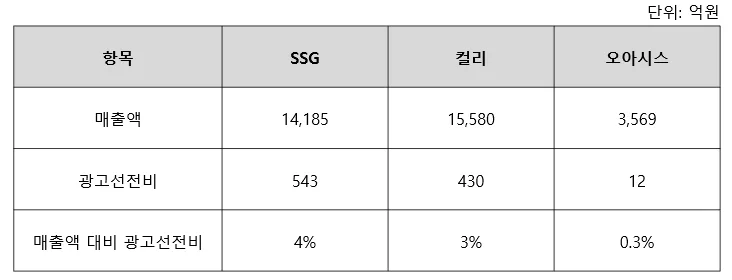
3.6.2 How/Benefit: 온라인/오프라인 채널 활용 - 홍보 효과 극대화
㈜오아시스는 자사의 오프라인 매장을 홍보도구로 적극 활용하여 마케팅 비용을 최소화하였다. 실제로 주요 경쟁사 대비 광고홍보비 비중 가장 낮은데, 이는 경쟁사들의 공격적 마케팅으로 지속확대되는 신선식품 새벽배송 시장에 ㈜오아시스는 ‘무임 승차(Free Ride)’ 함으로써 비용 절감을하고 있다고 우선 볼 수 있다. 그 대신 ㈜오아시스는 오프라인 매장을 고객에 대한 홍보 도구로활용하여 일종의 ‘매출이 발생하는 광고판’로 사용하고 있다. (그림 30 참조) 별도의 추가 마케팅 비용없이 기존 영업 영위 활동이 곧 마케팅 효과가 되는 역발상이 주효한 것이다.
그림 30. 오아시스 오프라인 매장 전경 (오아시스 홈페이지)
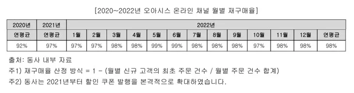
㈜오아시스의 마케팅 효율성은 경쟁사와 매출액 대비 광고선전비를 비교해보면 더 명확해진다. ㈜에스에스지닷컴과 ㈜컬리는 매출액 대비 광고선전비 비중이 3%에서 4% 수준이나 ㈜오아시스는 0.3%에 불과하다. (표 16 참조) 하지만 광고 효율 측면에서는 뒤쳐지지 않는다. ㈜오아시스의고객들은 연평균 90% 이상의 재구매율을 보이면서 높은 고객 충성도를 보이고 있다. (표 17 참조) 이러한 부분은 ㈜오아시스가 비용을 최소화하면서도 매출을 지속 증가시킬 수 있는 발판이 되고 있다
표 16. 오아시스-경쟁사 간 매출액 대비 광고선전비 비교 (DART 공시 자료, 본인 재구성)
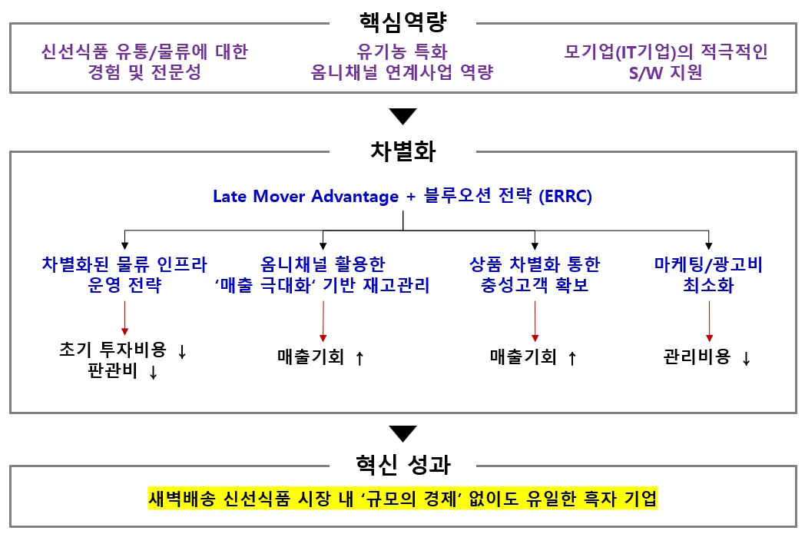
표 17. 오아시스 온라인 채널 월별 재구매율 (오아시스 DART 공시자료)
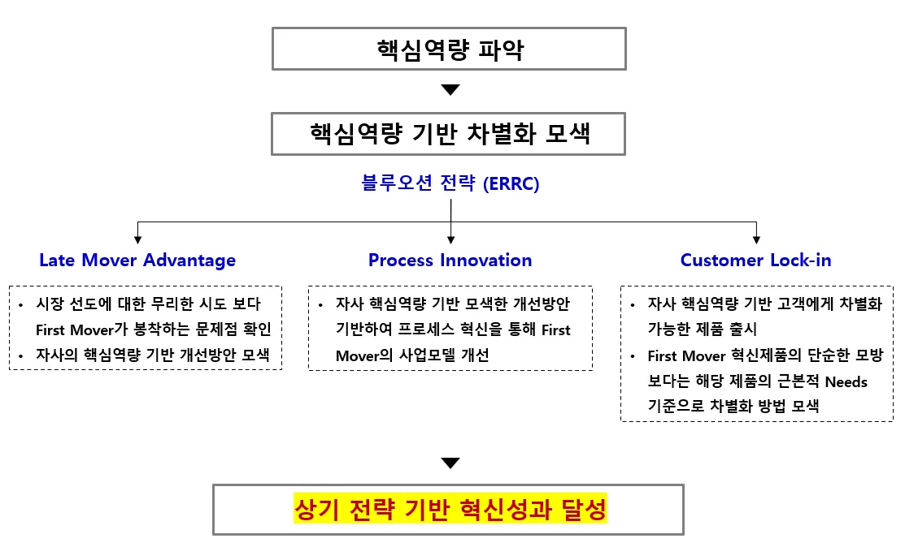
제 4 장. 결론 및 시사점
본문에서 설명한 바와 같이, ㈜오아시스의 이커머스 신선식품 새벽배송 시장 진출 후 지금까지성취한 혁신과정은 크게 핵심역량과 차별화 전략으로 나뉠 수 있다.
우선 ㈜오아시스의 핵심역량은 크게 신선식품 유통/물류에 대한 경험 및 전문성, (모기업 기반)
자체 소프트웨어 개발 능력, 그리고 유기농 특화 옴니채널 연계사업 역량으로 나뉜다. ㈜오아시스는이러한 핵심역량을 바탕으로 새벽배송 시장에 후발주자로 진입하여, 후발주자의 이점(Late Mover Advantage)을 활용하여 4 가지 ERRC 전략을 추진하였다. 우선 차별화된 물류 인프라 운영전략을바탕으로 초기 투자비용과 (인건비 등) 판매/관리 비용을 절감하였다. 그리고 옴니채널을 활용한공격적 재고관리를 바탕으로 매출기회를 극대화 시키면서도 자체 소싱역량 기반 낮은 매출원가를경쟁력 있게 확보하였다. 또한 핵심상품 품질 및 가격경쟁력 확보를 통해 고객에게 ‘기본 신선재료특화’ 정체성을 확보하여 재구매율 90% 이상을 유지하면서 충성고객을 확보하였고 거래건수 및거래액 또한 지속 증가 중이다.
이러한 핵심역량과 차별화를 바탕으로 ㈜오아시스는 새벽배송 신선식품 시장에서 ‘규모의 경제’ 없이도 유일한 흑자 기업이란 혁신 성과를 달성하였다. 위와 같은 내용을 프레임워크로 정리하자면
그림 31 와 같다.
그림 31. 오아시스 혁신 과정 개념도 (본인 작성)
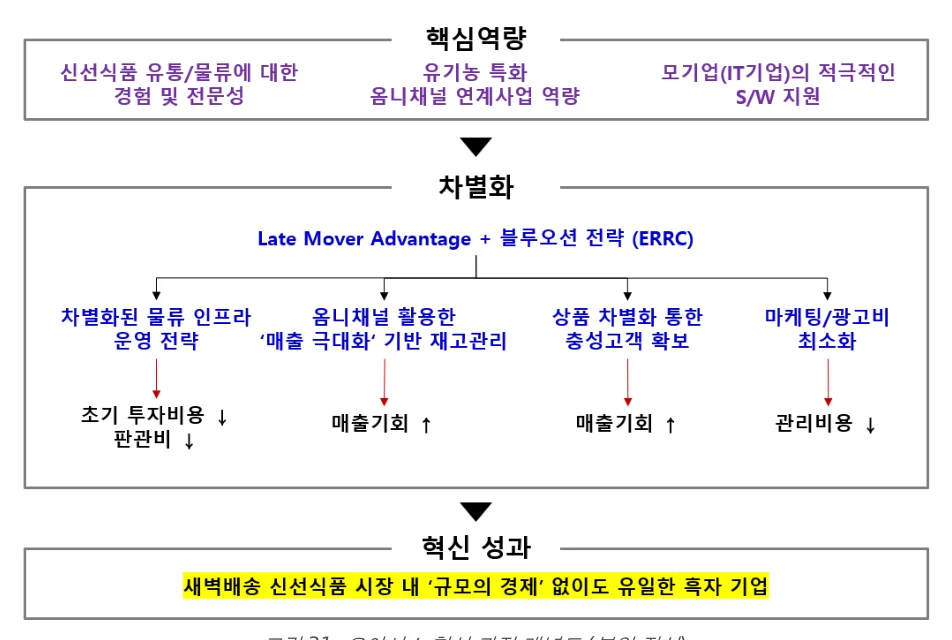
이러한 ㈜오아시스의 성공 방정식은 기존 사업에서 혁신을 추진하거나 해당 혁신을 기반으로신규시장에 진입 하고자는 기업들에게 의미 있는 통찰을 제공한다. 상기 프레임워크를 좀 더 일반화한관점으로 재정리해보면 그림 32 과 같다.
우선 최우선으로 선행되어야 할 점은 해당 기업만의 핵심역량을 명확히 파악해야 한다.
핵심역량을 파악하기 위해서는 (본 연구에서 수행한 바와 같이) Prahalad 과 Hamel 이 제시한 3 가지요건 (고객 가치 제공, 차별화, 확대적용 가능) 부합여부와 VRIO Framework 의 4 가지 요건 (가치, 희소성, 모방 불가능성, 조직 적합성) 부합여부를 함께 고려해 보는 것을 추천한다.
이와 같이 핵심역량을 파악했다면, 이를 기반으로 하여 차별화 전략을 모색해야 한다. 기존사업모델의 변화를 모색한다면, ㈜오아시스와 같이 블루오션 전략을 고민해볼 수 있다. 이에 대한세부 방법론으로는 기존 시장에 진입하여 후발주자의 이점을 적극 활용해 볼 수 있을 것이다. 하지만
결국 고객의 니즈에 부합하여야 하므로 고객 락인을 할 수 있는 차별화 방안을 모색해야 할 것이다.
그림 32. 오아시스 혁신 Framework (본인 작성)
제 5 장. 한계점 및 제언
지금까지 ㈜오아시스를 중심으로 기존 서비스 기업들의 혁신 방향성에 대해 고찰해보았으며, 그결과에 따라 타 기업들이 참고할 수 있는 시사점까지 도출해보았다. 하지만 ㈜오아시스 사례에는다음과 같은 한계점이 존재한다.
㈜오아시스는 신선식품 새벽배송 시장 내에서 규모의 경제 없이 흑자 전환을 한 기업이라는면에서 성공적인 혁신사례이다. 그러나 상대적 소규모 기업의 ‘흑자’가 혁신의 결과물이 될 수있는지에 대해 의문이 있을 수 있다. 물론 ‘흑자’가 곧 혁신은 아니지만 새벽배송 시장에서 ‘새벽배송은곧 적자’라는 고정 관념을 신규 후발기업이 기존 경쟁사들의 방식과 차별화된 방향성으로 혁신을추구하여 성과를 얻었다는 점에서 ㈜오아시스 사례는 혁신 관점에서 충분히 유의미하다고 볼 수 있다하지만 ㈜오아시스는 아직 경쟁사 대비 매출 규모가 적고 배송 가능 지역도 제한적이라 이러한성과를 사업 확대 시에도 지속적으로 유지할 수 있을지는 남은 숙제이다. ㈜오아시스는 2022 년 7 월배송지역 확대를 위해 경기도 의왕시에 10 만 제곱미터 규모의 대형 물류센터를 건립하여 운영중이다. (이데일리, 2022) 일반적인 자동화 기반 대형 물류센터보다는 기존 소규모 물류센터에서의운영방식을 대거 차용하여 설계 및 운영 중이며, 이를 통해 기존의 흑자 공식을 이어 나가고자노력하고 있다. 그 노력의 결과, 2023 년 3 분기까지는 여전히 흑자를 기록 중이다. 그러나 규모확대에 따른 진통은 불가피할 수밖에 없어 흑자 기조가 지속될 것인지는 계속 지켜볼 필요가 있다. 연구 방법론 측면에서의 한계점은 다음과 같다. 우선 본 연구는 이커머스 신선식품 새벽배송시장에 국한하여 진행했다는 점에서 한계점과 동시에 추가 연구 기회들이 많이 열려 있다. 국내 많은혁신기업들을 이와 같은 방식으로 분석하고 통찰 포인트를 도출한다면 현재 혁신에 분투 중인기업들에게 좋은 교과서가 될 것이다.
또한 본 연구는 케이스 스터디 방식(질적 연구)으로 수행되었다. 하지만 범위를 넓혀서 국내서비스 기업들의 업종별 혁신 수준과 혁신을 가로 막는 장벽들은 무엇인지, 혹은 혁신을 장려할 수있는 부분은 무엇인지 데이터 기준으로 양적 연구 또한 진행 필요성이 있어 보인다. 이와 같은 연구결과는 정책 입안자도 참고할 수 있으며, 이는 국내 서비스 기업의 혁신 수준 향상에 기여할 수 있는정책 입안의 근거가 될 수 있을 것이다.
상기 한계점에도 불구하고 다음과 같이 몇 가지 제언하고자 한다. 우선 상기 ㈜오아시스 사례는시장 내 1 등 기업이 아니어도 자사만의 핵심역량을 바탕으로 한 차별화를 통해 충분히 혁신성과를 낼수 있다는 점을 증명한다. 이는 시장점유율이 낮거나 시장 내 후발주자인 경우에도 전략의 방향성만적절하다면 성공적인 혁신 결과로 이어질 수 있다는 것을 의미한다. 그러므로 혁신은 1 등 기업의전유물이라는 관념에 사로잡히기 보다는 각 기업의 상황에 맞게 핵심역량 기반한 차별화를추진한다면 성공적인 혁신 결과를 얻을 수 있다.
또한 ㈜오아시스 사례에서 볼 수 있듯이 맹목적인 기술 및 인프라 투자만이 능사가 아니다. 자사의 핵심역량을 우선 파악하는 것이 가장 중요하며 이를 기반으로 어떻게 경쟁우위를 가져갈것인지 고민한 후 적절한 전략 방향성을 세워 효율적인 투자를 진행해야 한다. 상기 연구에서 살펴본새벽배송 시장의 경우와 같이, 무분별한 투자는 지속적인 적자로 사업의 지속가능성을 저해하며 결국시장에서 철수하는 상황까지 이어질 수 있다.
그리고 무엇보다도 ㈜오아시스의 비즈니스 모델 자체를 하나의 원칙으로 적용하기 보다는 ㈜ 오아시스가 혁신을 추진한 방식에 더 초점을 둘 필요가 있다. ㈜오아시스는 핵심역량을 명확히파악하였고 이를 기반으로 기존 경쟁자들이 가지 않는 차별화를 길을 선택하였다. 이처럼 기업들은상기 기술한 바와 같이 자사 핵심역량 파악에 힘쓰고 철저히 핵심역량 바탕으로 혁신 전략을 수립해야한다.
그 밖에도, 성공적인 혁신 결과는 새로운 사업의 교두보로 이어진다는 점에서 긍정적인영향력이 크다. 그러므로 단순히 혁신 결과물에 대한 기대 뿐만 아니라 다양한 사업확장성에 따른긍정적 영향까지 함께 염두 하여 혁신활동이 가져올 전반적인 긍정적 영향을 기대하고 적극적으로추진 및 투자를 진행해야 한다. ㈜오아시스의 경우에도 자체 개발한 물류센터 솔루션인오아시스루트의 성공사례를 적극 활용하여 해당 기술을 상용화하는 계획을 가지고 있다. 뿐만 아니라소프트웨어 역량과 경험을 바탕으로 자사 오프라인 매장에 무인 자동화 기술도 순차적으로 도입하려하고 있다. 그리고 신선식품 물류 역량을 적극 활용하여 타 기업과의 합작법인을 통해 ‘온-에어딜리버리’와 ‘퀵 커머스’와 같은 새로운 사업 시도도 진행되고 있다.
최근 빠른 기술 발전으로 생성형 인공지능과 같은 영향력 높은 기술들이 상용화되고 이러한기술들이 사업에 다양하게 접목되면서 국내 뿐만 아니라 글로벌 시장에서의 변화가 그 어느 때보다빠르다. 이에 따라 기존 기업들이 체감하는 불확실성은 그 어느 때보다 높으며 다양한 시도를 하지만그 결과가 아직까지는 많이 미진하다. 하지만 이러한 불확실성은 기존 사업을 혁신하고 새로운 시장을개척 및 확대할 수 있는 절호의 기회 또한 될 수 있다. ㈜오아시스와 같이 핵심역량을 바탕으로 혁신전략을 수립하여 효율적으로 추진해 나간다면, 이러한 상황은 위기가 아니라 새로운 성장을 위한발판이 될 수 있다. 보다 많은 기업들이 위기를 기회로 전환하여 국내 시장을 넘어 세계에서도 우뚝서는 그날을 기대해보며 본 연구를 마친다.
Reference
1. Barney, J. B. (1986). Strategic factor markets: Expectations, luck, and business strategy. Management science, 32(10), 1231-1241. 2. Barney, J. B., & Hesterly, W. S. (2010). VRIO framework. Strategic management and competitive advantage, 3, 68-86.
3. Farrell, J., & Shapiro, C. (1986). Dynamic competition with lock-in. 4. Kim, W. C., & Mauborgne, R. (1997). Value innovation. Harvard Business Review, 1.
5. Kim, W. C. & Mauborgne, R. (2005). Blue ocean strategy. Harvard Business School Press, Boston, Massachusetts.
6. Klemperer, P. (1987). The competitiveness of markets with switching costs. The RAND Journal of Economics, 138-150.
7. Prahalad, C. K., & Hamel, G. (1990). The core competence of the corporation. Harvard Business Review, 68(3), 79-91. 8. Shankar, V., Carpenter, G. S., & Krishnamurthi, L. (1998). Late mover advantage: How innovative late entrants outsell pioneers. Journal of Marketing research, 35(1), 54-70.
9. Suarez, F. F., & Utterback, J. M. (1995). Dominant designs and the survival of firms. Strategic management journal, 16(6), 415-430. 10. Utterback, J. M., & Abernathy, W. J. (1975). A dynamic model of process and product innovation. Omega, 3(6), 639-656.
11. Utterback, J. M. (1994). Mastering the dynamics of innovation. Harvard Business School Press. Boston, MA.
12. 교보증권. (2021, December 17). “새벽배송, 동이 틀 무렵” 13. 마종수. (2023, February 7). “오아시스 새벽배송을 ‘흑자’로 만든 4 가지 물류방법론”. 커넥터스.
https://contents.premium.naver.com/connectx/us/contents/230207 173149598ts 14. 마종수. (2023, February 7). “이마트 온라인 물류센터가 ‘매장’으로 진화한 까닭”. 커넥터스.
https://contents.premium.naver.com/connectx/us/contents/2301301756 48623ou 15. 성아인. (2022, August 18). “흑자 새벽배송 ‘오아시스’의 새 물류센터에 가봤다”. Byline Networks. https://byline.network/2022/08/17_0814/ 16. 엄지용. (2022, June 16). “공룡도 철수하는 새벽배송을 위한 변명”. 커넥터스. https://contents.premium.naver.com/connectx/us/contents/22061616431 1320zq
17. 윤성국. 대전환의 시대: 이커머스의 부상(浮上) 이후 소매유통업 경쟁전망,
나이스신용평가, 2022.
18. 윤정훈. (2022, August 26). “새벽배송 성공의 전초기지…오아시스, ‘의왕 물류센터’ 본격 가동”. 이데일리. https://www.edaily.co.kr/news/read? newsId=012234466324
31256&mediaCodeNo=257&OutLnkChk=Y 19. 이안나. (2023, March 31). “투어는 야놀자, 쇼핑은 큐텐”...1 세대 이커머스인터파크 결말”. 디지털데일리.
https://www.ddaily.co.kr/page/view/2023033115370863790 20. 이정우, 강희종, 조가원, 손수아, 김태양, 김민재, 안재혁. 2021 년 한국기업혁신조사: 서비스업 부문, 과학기술정책연구원, 2021.
21. 이정우, 강희종, 조가원, 손수아, 김태양, 김민재, 안재혁. 2022 년 한국기업혁신조사: 제조업 부문, 과학기술정책연구원, 2022.
22. 정혜민. (2019, August 13). “아마존도 실패한 신선식품 장보기…마켓컬리, 성공비결 ‘이것’ 때문”. 뉴스 1. https://www.news1.kr/articles/?3693101 23. 통계청. (2020). “2019 년 12 월 및 연간 온라인 쇼핑 동향”.
24. 통계청. (2023). “2022 년 12 월 및 연간 온라인 쇼핑 동향”.
25. 한국농촌경제연구원. (2022). “2022 식품소비행태조사 기초분석보고서”.
26. 한지명. (2023, January 30). “컬리, '송파 물류센터'…평택·김포 확장 이전”. 뉴스 1. https://www.news1.kr/articles/?4937032 27. 함봉균. (2023, April 16). “컬리, 내달 평택물류센터 오픈...전국 유통망 완성”. 전자신문. https://www.etnews.com/20230414000215